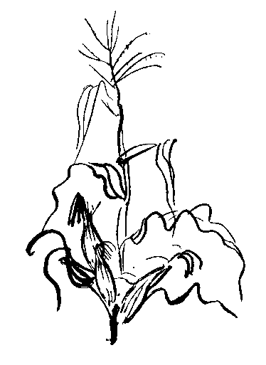
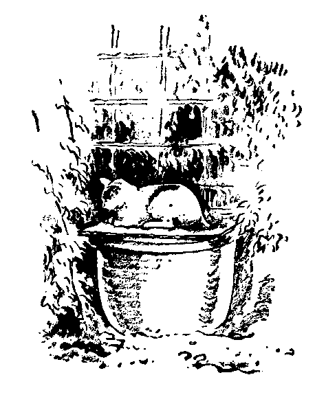
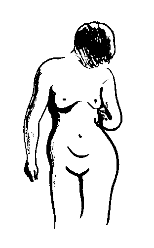
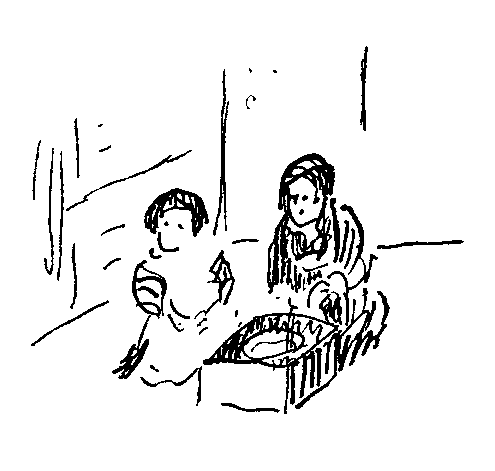
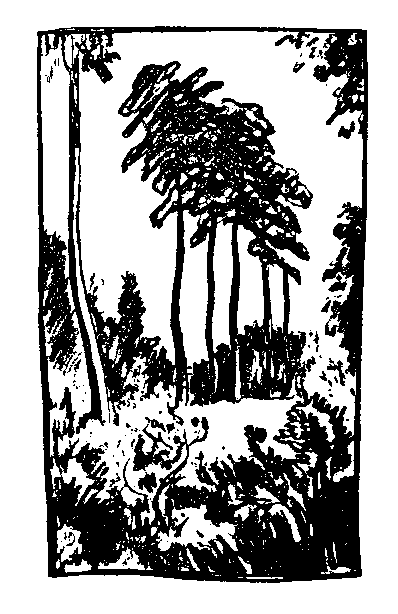
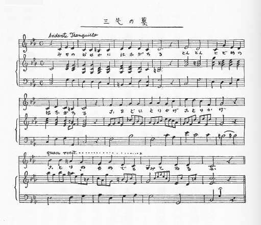
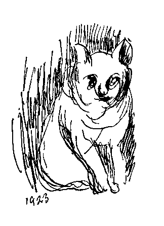
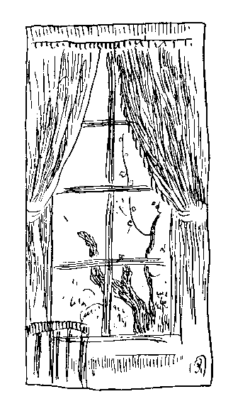

大正九年ごろから、友人
今度、もと岩波書店でおなじみの
元来が、ほとんど同人雑誌のような俳句雑誌のために、きわめて気楽に気ままに書き流したものである。原稿の締め切りに迫った催促のはがきを受け取ってから、全く不用意に机の前へすわって、それから大急ぎで何か書く種を捜すというような場合も多かった。雑誌の読者に読ませるというよりは、東洋城や豊隆に読ませるつもりで書いたものに過ぎない。従って、身辺の
これらの短文の中のあるものは、その後に自分の書いた「
中には、ほんの二、三ではあるが、「無題」「曙町より」とは別の欄に載せた短文や書信がある。これも実質的には全く同じものであるから、他のものといっしょにして年月の順に挿入することにした。
大正十三年ごろの「無題」に、ページの空白を埋めるために自画のカットを入れたのがある。その中の数葉を選んでこの集の景物とする。これも大正のジャーナリズムの世界の片すみに起こった、ささやかな一つの現象の記録というほかには意味はない。
この書の読者への著者の願いは、なるべく心の
（昭和八年六月、『柿の種』）
［＃改丁］［＃ページの左右中央］
［＃改ページ］
［＃ページの左右中央］
棄てた一粒の柿の種
生えるも生えぬも
甘いも渋いも
畑の土のよしあし
生えるも生えぬも
甘いも渋いも
畑の土のよしあし
［＃改ページ］
＊
日常生活の世界と詩歌の世界の境界は、ただ一枚のガラス板で仕切られている。
このガラスは、初めから曇っていることもある。
生活の世界のちりによごれて曇っていることもある。
二つの世界の間の通路としては、通例、ただ小さな狭い穴が一つ明いているだけである。
しかし、始終ふたつの世界に出入していると、この穴はだんだん大きくなる。
しかしまた、この穴は、しばらく出入しないでいると、自然にだんだん狭くなって来る。
ある人は、初めからこの穴の存在を知らないか、また知っていても別にそれを捜そうともしない。
それは、ガラスが曇っていて、反対の側が見えないためか、あるいは……あまりに忙しいために。
穴を見つけても通れない人もある。
それは、あまりからだが
しかし、そんな人でも、病気をしたり、貧乏したりしてやせたために、通り抜けられるようになることはある。
まれに、きわめてまれに、天の
（大正九年五月、渋柿）
［＃改ページ］＊
宇宙の秘密が知りたくなった、と思うと、いつのまにか自分の手は一塊の土くれをつかんでいた。そうして、ふたつの眼がじいっとそれを見つめていた。
すると、土くれの分子の中から星雲が生まれ、その中から星と太陽とが生まれ、アミーバと
……そうして自分は科学者になった。
しばらくすると、今度は、なんだか急に唄いたくなって来た。
と思うと、知らぬ間に自分の
その声が自分の耳にはいったと思うと、すぐに、自然に次の声が出て来た。
声が声を呼び、句が句を誘うた。
そうして、行く雲は軒ばに止まり、山と水とは音をひそめた。
……そうして自分は詩人になった。
（大正九年八月、渋柿）
［＃改ページ］＊
夜がふけて、あたりが静かになったころに、どこかでふくろうの鳴くのが聞こえた。
「ふくろうが鳴くね」
と一人が言った。
するともう一人が
「なに、ありゃあふくろうじゃない、すっぽんだろう」
と言った。
彼の顔のどこにも戯れの影は見えなかった。
しばらく顔を見合わせていた仲間の一人が
「だって、君、すっぽんが鳴くのかい」
と聞くと
「でもなんだか鳴きそうな顔をしているじゃないか」
と答えた。
皆が声を放って笑ったが、その男だけは笑わなかった。
彼はそう信じているのであった。
その席に居合わせた学生の一人から、この話を聞かされた時には、自分も大いに笑ったのではあったが、あとでまたよくよく考えてみると、どうもその時にはやはりすっぽんが鳴いたのだろうと思われる。
……過去と未来を通じて、すっぽんがふくろうのように鳴くことはないという事が科学的に立証されたとしても、少なくも、その日のその晩の根津権現境内では、たしかにすっぽんが鳴いたのである。
（大正九年九月、渋柿）
［＃改ページ］＊
霊山の岩の中に閉じ込められて、無数の宝石が光り輝いていた。
試みにその中のただ一つを掘り出してこの世の空気にさらすと、たちまちに色も光も消え
同時に、霊山の岩の中に秘められたすべての宝石も、そのことごとくが皆ただの土塊に変わってしまった。
私の頭の中には、数限りもない美しい絵が秘蔵されていた。
私は試みに絵筆を取って、その中の一つを画布の上に写してみた。
……気のついた時はもう間に合わなかった。
……同時に頭の中のすべての美しい絵もみんな無残に塗り汚されてしまった。
そうして私はただのつまらない一画工になってしまった。
（大正九年十月、渋柿）
［＃改ページ］＊
ロンドンの動物園へインドから一匹の
蛇には
健全な蛇にはこの虫があまりつかないものである。
こんなことが先ごろの週刊タイムスに出ていた。
「この事実にはいろいろのモラールがある」
とＡが言った。
「さらに多くの詩がある」
とＢが答えた。
（大正九年十月、渋柿）
［＃改ページ］＊
夜ふけの汽車で、一人の紳士が夕刊を見ていた。
その夕刊の紙面に、犬のあくびをしている写真が、懸賞写真の第一等として掲げてあった。
その紳士は微笑しながらその写真をながめていたが、やがて、一つ大きなあくびをした。
ちょうど向かい合わせに乗っていた男もやはり同じ新聞を見ていたが、犬の写真のあるページへ来ると、口のまわりに微笑が浮かんで、そうして、……一つ大きなあくびをした。
やがて、二人は顔を見合わせて、互いに思わぬ微笑を交換した。
そうして、ほとんど同時に二人が大きく長くのびやかなあくびをした。
あらゆる「同情」の中の至純なものである。
（大正九年十一月、渋柿）
［＃改ページ］＊
総入れ歯をした人が、どうかすると、その歯がずきずきうずくように感じることもあるそうである。
こういう話を聞きながら、私はふと、出家
生命のある限り、世を捨てるということは、とてもできそうに思われない。
（大正九年十一月、渋柿）
［＃改ページ］＊
「庭の植え込みの中などで、しゃがんで草をむしっていると、不思議な性的の衝動を感じることがある」
と一人が言う。
「そう言えば、私はひとりで荒磯の岩陰などにいて、潮の香をかいでいる時に、やはりそういう気のすることがあるようだ」
ともう一人が言った。
この対話を聞いた時に、私はなんだか非常に恐ろしい事実に
自然界と人間との間の関係には、まだわれわれの夢にも知らないようなものが、いくらでもあるのではないか。
（大正九年十二月、渋柿）
［＃改ページ］＊
気象学者が cirrus と名づける雲がある。
白い羽毛のようなのや、
通例
私の子供はそんなことは無視してしまって、勝手にスウスウ雲と命名してしまった。
（大正九年十二月、渋柿）
［＃改ページ］＊
親類のＴが八つになる男の子を連れて年始に来た。
古い昔の教導団出身の彼は、中学校の体操教師で、男の子ばかり九人養っている。
挨拶がすんで、
Ｔがあわててしかると、するするとすべり落ちて、Ｔの横の
しきりに言い訳をするＴを気の毒とは思いながらも、私は愉快な、心からの笑い声が咽喉からせり上げて来るのを防ぎかねた。
貧しくてもにぎやかな家庭で、八人の兄弟の間に自由にほがらかに活溌に育って来たこの子の身の上を、これとは反対に実に静かでさびしかった自分の幼時の生活に思い比べて、少しうらやましいような気もするのであった。
（大正十年一月、渋柿）
［＃改ページ］＊
人殺しをした人々の魂が、毎年きまったある月のある日の夜中に墓の中から呼び出される。
そうして、めいめいの昔の犯罪の現場を見舞わせられる。
行きがけには、だれも彼も
「正当だ。おれのしたことは正当だ」
とつぶやきながら出かけて行く。
……しかし、帰りには、みんな
「悪かった。悪かった」
とつぶやきながら、めいめいの墓場へ帰って行くそうである。
私は、……人殺しだけはしないことにきめようと思う。
（大正十年二月、渋柿）
［＃改ページ］＊
彼はある日歯医者へ行って、奥歯を一本抜いてもらった。
舌の先でさわってみると、そこにできた空虚な空間が、自分の
……それが、ひどく彼に人間の肉体のはかなさ、たよりなさを感じさせた。
またある時、かたちんばの
それから、……
そんな事から彼は、おしまいには、とうとう坊主になってしまった。
（大正十年二月、渋柿）
［＃改ページ］＊
生来の盲人は眼の用を知らない。
始めから眼がないのだから。
眼明きは眼の用を知らない。
生まれた時から眼をもっているのだから。
（大正十年三月、渋柿）
［＃改ページ］＊
アルバート・ケンプという男が、百十時間ぶっ通しにピアノを弾き続けて、それで世界のレコードを取ったという記事が新聞に出ていた。
驚くべき非音楽的な耳もあるものだと思う。
（大正十年三月、渋柿）
［＃改ページ］＊
眼は、いつでも思った時にすぐ閉じることができるようにできている。
しかし、耳のほうは、自分では自分を閉じることができないようにできている。
なぜだろう。
（大正十年三月、渋柿）
［＃改ページ］＊
まだ実験したことはない。
もし、多くの場合にこれが事実であるとすれば、それはこの動物の背光性 negative phototropism によって説明されるであろう。
多くの人間の
この説明が仮に正しいとしても、この事実の不思議さは少しも減りはしない。
不思議さが少しばかり根元へ喰い込むだけである。
すべての科学的説明というものについても同じことが言われるとすれば、……
未来の宗教や芸術はやはり科学の神殿の中に安置されなければならないような気がする。
（大正十年四月、渋柿）
［＃改ページ］＊
鳥や魚のように、自分の眼が頭の両側についていて、右の眼で見る景色と、左の眼で見る景色と別々にまるでちがっていたら、この世界がどんなに見えるか、そうしてわれわれの世界観人生観がどうなるか。……
いくら骨を折って考えてみても、こればかりは想像がつかない。
鳥や魚になってしまわなければこれはわからない。
（大正十年四月、渋柿）
［＃改ページ］＊
大正九年の七月に、カイゼル・ウィルヘルムの第六王子ヨアヒムが自殺をした。
ピストルの
一度自覚を回復したが、とうとう助からなかった。
王子の採った自殺の方法が科学的にはなはだ幼稚なものだと思われた。
なんだかドイツらしくないという気がした。
しかし、……心臓をねらうかわりに、脳を撃つか、あるいは適切な薬品を選んだ場合を想像してみると、王子に対するわれわれの感情にはだいぶんの違いがある。
やっぱり心臓を選ばなければならなかったであろう。
（大正十年五月、渋柿）
［＃改ページ］＊
「ダンテはいつまでも大詩人として尊敬されるだろう。……だれも読む人がないから」
と、意地の悪いヴォルテーアが言った。
ゴーホやゴーガンもいつまでも崇拝されるだろう。……
だれにも彼らの絵がわかるはずはないからである。
（大正十年五月、渋柿）
［＃改ページ］＊
「あらゆる結婚の儀式の中で、最も神聖で、最もサブライムなものは、未開民族の間に今日でもまだ行なわれている
近年まで、この風習が日本の片すみに残っていたが、惜しいことに、もうどこにも影をとどめなくなったらしい。
そうして、近ごろ都会で行なわれるような、最も不純で、最も堕落したいろいろの様式ができあがった。」
こう言ってＰ君が野蛮主義を
（大正十年六月、渋柿）
［＃改ページ］＊
「男爵の奥様でも私たちでもやっぱり同じ女だ」といったような意味のことを揚言したそうである。
僕はこの新聞を読んだ時に、そのおかみさんたちの顔がありあり見えるような気がした。
そうして腹が立った。……
いくらデモクラシーが世界に
ヴィナスのアリストクラシーは永遠のものである。
こう言ってＱ君が一人で腹を立てている。
（大正十年六月、渋柿）
［＃改ページ］＊
油画をかいてみる。
正直に実物のとおりの各部分の色を、それらの各部分に相当する「各部分」に塗ったのでは、できあがった結果の「全体」はさっぱり実物らしくない。
全体が実物らしく見えるように描くには、「部分」を実物とはちがうように描かなければいけないということになる。
印象派の起こったわけが、やっと少しわかって来たような気がする。
思ったことを如実に言い現わすためには、思ったとおりを言わないことが必要だという場合もあるかもしれない。
（大正十年七月、渋柿）
［＃改ページ］＊
寝入りぎわの
梯子の下に自分がいて、これから登ろうとして見上げているのか、それとも、梯子の上にいて、これから降りようとしているのか、どう考えてもわからない。
（大正十年七月、渋柿）
［＃改ページ］＊
雨戸を細目にあけて外をのぞいて見ると、
大きな
見ているうちに、奇妙な笑いが腹の底から込み上げて来た。
そうして声をあげてげらげら笑った。
その瞬間に私は、天と地とが大声をあげて、私といっしょに笑ったような気がした。
（大正十年八月、渋柿）
［＃改ページ］＊
その様子が人間の居眠りのさまに実によく似ている。
人間はいくら年を取っても、やはり時々は何かしら発見をする機会はあるものと見える。
これだけは心強いことである。
（大正十年八月、渋柿）
［＃改ページ］＊
「三から五ひくといくつになる」と聞いてみると、小学一年生は「零になる」と答える。
中学生がそばで笑っている。
３−５＝−２という「規約」の上に組み立てられた数学がすなわち代数学である。
しかし３−５＝０という約束から出発した数学も可能かもしれない。
しかしそれは代数ではない。
物事は約束から始まる。
俳句の約束を無視した短詩形はいくらでも可能である。
のみならず、それは立派な詩でもありうる。
しかし、それは、もう決して俳句ではない。
（大正十年九月、渋柿）
［＃改ページ］＊
東京へんでは、七月ごろから、もうそろそろ秋の「実質」が顔を出し始める。
しかし、それがために、かえって、いよいよ秋の「季節」が到来した時の、秋らしい感じは弱められるような気もする。
たまには、前触れなしの秋が来たらおもしろいかもしれない。
（大正十年九月、渋柿）
［＃改ページ］
［＃改ページ］
＊
一に一を加えて二になる。
これは算術である。
しかし、ヴェクトルの数学では、１に１を加える場合に、その和として、０から２までの間の任意な値を得ることができる。
美術展覧会の審査には審査員の採点数を加算して採否を決めたりする。
あれは算術のほかに数学はないと思っている人たちのすることとしか思われない。
（大正十年十月、渋柿）
［＃改ページ］＊
新しい帽子を買ってうれしがっている人があるかと思うと、また一方では、古いよごれた帽子をかぶってうれしがっている人がある。
（大正十年十月、渋柿）
［＃改ページ］＊
昔、ロンドン塔でライオンを飼っていた。
十四世紀ごろの記録によると、ライオンの一日の食料その他の費用が六ペンスであった。
そうして囚人一人前の費用はというと、その六分の一の一ペニーであったそうである。
今の上野動物園のライオンと、深川の細民との比較がどうなっているか知りたいものである。
（大正十年十月、渋柿）
［＃改ページ］＊
コスモスという草は、一度植えると、それから後数年間は、毎年ひとりで生えて来る。
今年も三、四本出た。
延び延びて、私の
今朝行って見ると、枝の
よく見ると、なんだか、つぼみらしいものが少し見えるようである。
コスモスの高さは蟻の身長の数百倍である。
人間に対する数千尺に当たるわけである。
どうして蟻がこの高い高い茎の頂上につぼみのできたことをかぎつけるかが不思議である。
（大正十年十一月、渋柿）
［＃改ページ］＊
白い
これは、実際私が、そばで聞いていたから、確かな事実である。
（大正十年十一月、渋柿）
［＃改ページ］＊
そこの道ばたに、小さなふろしきを一枚しいて、その上にがま口を五つ六つ並べ、そのそばにしゃがんで、何かしきりにしゃべっている男があった。
往来人はおりからまれで、たまに通りかかる人も、だれ一人、この商人を見向いて見ようとはしなかった。
それでも、この男は、あたかも自分の前に少なくも五、六人の顧客を控えてでもいるような意気込みでしゃべっていた。
北西の風は道路の
この男の心持ちを想像しようとしてみたができなかった。
しかし、めったに人の評価してくれない、あるいは見てもくれない文章をかいたり絵をかいたりするのも、考えてみれば、やはりこの道路商人のひとり言と同じようなものである。
（大正十年十二月、渋柿）
［＃改ページ］＊
宿屋や料理屋などの広告に、その庭園や泉石の風景をペンキ絵で描いた建て札のようなものが、よく
たとえば、その池などが、ちょっとした湖水ぐらいはありそうに描かれているが、実際はほんの金魚池ぐらいのものであったりする。
ああいう絵をかく絵かきは、しかし、ある意味でえらいと思う。
天然を超越して、しかもまたとにかく新しい現実を創造するのだから。
（大正十年十二月、渋柿）
［＃改ページ］＊
暮れの押し詰まった銀座の街を、子供を連れてぶらぶら歩いていた。
新年用の盆栽を並べた露店が、何軒となくつづいている。
貝細工のような福寿草よりも、せせこましい枝ぶりをした
まんじゅうをふかして売っている露店がある。
私は、そのまんじゅうをつまんで、両の
そして子供らといっしょにそれを味わってみたいと思った。
まんじゅうの前に動いた私の心の惰性は、ついその隣の紙風船屋へ私を導いて、そこで私に大きな風船玉を二つ買わせた。
まんじゅうを食う事と、紙風船をもてあそぶ事との道徳的価値の差違いかんといったような事を考えながら、また子供の手をひいて暮れの銀座の街をぶらぶらとあてもなく歩いて行った。
（大正十一年二月、渋柿）
［＃改ページ］＊
祖父がなくなった時に、そのただ一人の女の子として取り残された私の母は、わずかに十二歳であった。
家を継ぐべき養子として、当時十八歳の父が迎えられる事になったが、江戸詰めの藩公の許可を得るために往復二か月を要した。
それから五十日の喪に服した後、さらに江戸まで申請して、いよいよ家督相続がきまるまでにまた二か月かかった。
一月二十七日に祖父が死んで、七月四日に家督が落ち着いたのだそうである。
喪中は座敷に
すべてが落着した時に、庭は荒野のように草が茂っていて、始末に困ったそうである。
（大正十一年四月、渋柿）
［＃改ページ］＊
安政時代の土佐の高知での話である。
居合わせた人が、あわててその場にあった鉄瓶の湯をその
老媼は、その鉄瓶の底をなで回した掌で、自分の顔をやたらとなで回したために、顔じゅう一面にまっ黒い斑点ができた。
居合わせた人々は、そういう極端な悲惨な事情のもとにも、やはりそれを見て笑ったそうである。
（大正十一年四月、渋柿）
［＃改ページ］＊
子猫が勢いに乗じて高い樹のそらに上ったが、おりることができなくなって困っている。
親猫が樹の根元へすわってこずえを見上げては鳴いている。
人がそばへ行くと、親猫は人の顔を見ては訴えるように鳴く。
あたかも助けを求めるもののようである。
こういう状態が二十分もつづいたかと思う。
その間に親猫は一、二度途中まで登って行ったが、どうすることもできなくて、おめおめとまたおりて来るのであった。
子猫はとうとう降り始めたが、脚をすべらせて、
それを抱き上げて連れて来ると、親猫はいそいそとあとからついて来る。
そうして、縁側におろされた子猫をいきなり
子猫は、すぐに乳房にしゃぶりついて、音高くのどを鳴らしはじめる。
親猫もクルークルーと恩愛にむせぶように咽喉を鳴らしながら、いつまでもいつまでも根気よく嘗め回し、嘗めころがすのである。
単にこれだけの猫のふるまいを見ていても、猫のすることはすべて純粋な本能的衝動によるもので、人間のすることはみんな霊性のはたらきだという説は到底信じられなくなる。
（大正十一年六月、渋柿）
［＃改ページ］
［＃改ページ］
＊
平和会議の結果として、ドイツでは、発動機を使った飛行機の使用製作を制限された。
すると、ドイツ人はすぐに、発動機なしで、もちろん水素なども使わず、ただ風の
最近のレコードとしては約二十分も、らくらくと空中を翔けり回った男がある。
飛んだ距離は二里近くであった。
詩人をいじめると詩が生まれるように、科学者をいじめると、いろいろな発明や発見が生まれるのである。
（大正十一年八月、渋柿）
［＃改ページ］＊
シヤトルの
そのときに、そこの売り子が
「これはあなたにあげましょう。私この花がすきですから」
と言って、おまけに添えてくれたのが、珍しくもない
帰って来てまいたこれらのいろいろの種のうちの多くのものは、てんで発芽もしなかったし、また生えたのでもたいていろくな花はつけず、一年きりで影も形もなく消えてしまった。
しかし、かの売り子がおまけにくれた鳳仙花だけは、実にみごとに生長して、そうして鳳仙花とは思われないほどに大きく美しく花を着けた。
そうしてその花の種は、今でもなお、年々に裏庭の夏から秋へかけてのながめをにぎわすことになっている。
この一
（大正十一年十一月、渋柿）
［＃改ページ］＊
切符をもらったので、久しぶりに上野音楽学校の演奏会を聞きに行った。
あそこの聴衆席にすわって音楽を聞いていると、いつでも学生時代の夢を思い出すと同時にまた夏目先生を想い出すのである。
オーケストラの太鼓を打つ人は、どうも見たところあまり勤めばえのする派手な役割とは思われない。
何事にも光栄の冠を望む若い人にやらせるには、少し気の毒なような役である。
しかし、あれは実際はやはり非常にだいじな役目であるに相違ない。
そう思うと太鼓の人に対するある好感をいだかせられる。
ロシニのスタバト・マーテルを聞きながら、こんなことも考えた。
ほんとうのキリスト教はもうとうの昔に
（大正十二年一月、渋柿）
［＃改ページ］＊
大学の構内を歩いていた。
病院のほうから、子供をおぶった男が出て来た。
近づいたとき見ると、男の顔には、なんという皮膚病だか、
背中の子供は、やっと三つか四つのかわいい女の子であったが、世にもうららかな顔をして、この恐ろしい男の背にすがっていた。
そうして、「おとうちゃん」と呼びかけては、何かしら片言で話している。
そのなつかしそうな声を聞いたときに、私は、急に何物かが胸の中で溶けて流れるような心持ちがした。
（大正十二年三月、渋柿）
［＃改ページ］＊
数年前の早春に、神田の花屋で、ヒアシンスの球根を一つと、チューリップのを五つ六つと買って来て、中庭の小さな花壇に植え付けた。
いずれもみごとな花が咲いた。
ことにチューリップは勢いよく生長して、色さまざまの大きな花を着けた。
ヒアシンスは、そのそばにむしろさびしくひとり咲いていた。
その後別に手入れもせず、冬が来ても掘り上げるだけの世話もせずに、打ち棄ててあるが、それでも春が来ると、忘れずに芽を出して、まだ雑草も生え出ぬ黒い土の上にあざやかな緑色の焔を燃え立たせる。
始めに勢いのよかったチューリップは、年々に
つぼみのあるのもすくないらしい。
これに反して、始めにただ一本であったヒアシンスは、次第に数を増し、それがみんな元気よく生い立って、サファヤで造ったような花を鈴なりに咲かせている。
そうして小さな花壇をわが物のように占領している。
この二つの花の盛衰はわれわれにいろいろな事を考えさせる。
（大正十二年五月、渋柿）
［＃改ページ］＊
鰻のほうで押しかけて来なければものにならない。
次には、
その次には、鰻のいる穴の中へ釣り針をさしこんで、鰻の鼻先に見せびらかす方法がある。
これらはよほど主動的であるが、それでも鰻のほうで気がなければ成立しない。
次には、鰻の穴を捜して
これは純粋に主動的な方法である。
最後に
この場合のなりゆきを支配するものは「偶然」である。
（大正十二年六月、渋柿）
［＃改ページ］＊
無地の
東京という所も存外不便な所である。
このごろ石油ランプを探し歩いている。
神田や銀座はもちろん、板橋
東京という所は存外不便な所である。
東京市民がみんな石油ランプを要求するような時期が、いつかはまためぐって来そうに思われてしかたがない。
（大正十二年七月、渋柿）
（『柿の種』への追記） 大正十二年七月一日発行の「渋柿」にこれが掲載されてから、ちょうど二か月後に関東大震災が起こって、東京じゅうの電燈が役に立たなくなった。これも不思議な回りあわせであった。
［＃改ページ］＊
「開き戸のパタンパタン
おぼつかない手まねをしながら聞いた。
主婦はにやにや笑いながら、「ヘイ、ございます。……煽り留めとでも申しましょうか。」
出して来たボール箱には、なるほど、アオリドメと片仮名でちゃんと書いてあった。
うまい名をつけたものだと感心した。
物の名というものはやはりありがたいものである。
おつりにもらった、穴のある白銅貨の二つが、どういうわけだか、穴に糸を通して結び合わせてあった。
この二つの白銅の結び合わせにも何か適当な名前がつけられそうなものだと思ったが、やはりなかなかうまい名前は見つからない。
（大正十二年八月、渋柿）
［＃改ページ］＊
道ばたの
その幹に虫がたくさん群がっている。
紫色の紋のある美しい
よく見ると、木の幹には、いくつとなく、小指の頭ぐらいの穴があいて、その穴の周囲の樹皮がまくれ上がりふくれ上がって、ちょうど、人間の手足にできた
虫類はそれらの穴のまわりに群がっているのである。
人間の眼には、おぞましく気味の悪いこの樹幹の吹き出物に人間の知らない強い誘惑の魅力があって、これらの数多くの昆虫をひきよせるものと見える。
私は、この虫の世界のバッカスの饗宴を見ているうちに、何かしら名状し難い、恐ろしいような物すごいような心持ちに襲われたのであった。
（大正十二年九月、渋柿）
［＃改ページ］＊
震災の火事の焼け跡の煙がまだ消えやらぬころ、黒焦げになった樹の幹に
樹という樹に生え広がって行った。
そうして、その
道ばたに捨てられた握り飯にまでも、一面にこの赤かびが繁殖していた。
そうして、これが、あらゆる生命を焼き尽くされたと思われる焦土の上に、早くも盛り返して来る新しい生命の胚芽の先駆者であった。
三、四日たつと、焼けた
藤や桜は返り花をつけて、九月の末に春が帰って来た。
焦土の中に
崩れ落ちた工場の
（大正十二年十一月、渋柿）
［＃改ページ］＊
震災後の十月十五日に
川の岸辺にも川床にも、数限りもない流木が散らばり、引っかかっていた。
それが、大きな樹も小さな
それがまた、半ば泥に埋もれて、
また、かろうじて橋杭にしがみついて、濁流に押し流されまいと戦っているようなのもある。
上流の
（大正十二年十二月、渋柿）
［＃改ページ］＊
ある日。
汽車のいちばん最後の客車に乗って、後端の戸口から線路を見渡した時に、夕日がちょうど線路の末のほうに沈んでしまって、わずかな雲に夕映えが残っていたので、
汽車の進むにつれて、おりおり線路のカーヴにかかる。
カーヴとカーヴとの間はまっすぐな直線である。
それが、多くは踏切の所から突然曲がり始める。
ほとんど一様な曲率で曲がって行っては、また突然直線に移る。
なるほど、こうするのが工事の上からは最も便利であろうと思って見ていた。
しかし、少なくもその時の私には、この、曲線と直線との継ぎはぎの鉄路が、なんとなく不自然で、ぎごちなく、また不安な感じを与えるのであった。
そうして、鉄道に沿うた、昔のままの街道の、いかにも自然な、美しく優雅な曲線を、またなつかしいもののように思ってながめるのであった。
（大正十三年一月、渋柿）
［＃改ページ］＊
震災後、久しぶりで銀座を歩いてみた。
いつのまにかバラックが軒を並べて、歳暮の店飾りをしている。
東側の人道には、以前のようにいろいろの露店が並び、西側にはやはり、新年用の盆栽を並べた
歩きながら、店々に並べられた商品だけに注目して見ていると、地震前と同じ銀座のような気もする。
往来の人を見てもそうである。
してみると、銀座というものの「内容」は、つまりただ商品と往来の人とだけであって、ほかには何もなかったということになる。
それとも地震前の銀座が、やはり一種のバラック街に過ぎなかったということになるのかもしれない。
（大正十三年二月、渋柿）
［＃改ページ］＊
ルノアルの絵の好きな男がいた。
その男がある女に恋をした。
その女は、他人の眼からは、どうにも美人とは思われないような女であったが、どこかしら、ルノアルの描くあるタイプの女に似たところはあったのだそうである。
俳句をやらない人には、到底解することのできない自然界や人間界の美しさがあるであろうと思うが、このことと、このルノアルの女の話とは少し関係があるように思われる。
（大正十三年三月、渋柿）
［＃改ページ］
［＃改ページ］
＊
夢の世界の可能性は、現実の世界の可能性の延長である。
どれほどに有りうべからざる事と思われるような夢中の事象でも、よくよく考えてみると、それはただ
してみると、事によると、夢の中で可能なあらゆる事が、人間百万年の未来には、みんな現実の可能性の中にはいって来るかもしれない。
もしそうだとすると、その百万年後の人たちの見る夢はどんなものであるか。
それは現在のわれわれの想像を超越したものであるに相違ない。
（大正十三年四月、渋柿）
［＃改ページ］＊
日本は地震国だと言って悲観する人もある。
しかし、いわゆる地震国でない国にも、まれにはなかなかの大地震の起こることはある。
そうして、日本ではとても見られないような大仕掛けの大地震が起こることもある。
一九〇六年のサンフランシスコ地震の時に生じた断層線の長さは四百五十キロメートルに達した。
一九二〇年のシナ
考えてみると、日本のような国では、少しずつ、なしくずしに小仕掛けの地震を連発しているが、現在までのところで安全のように思われている他の国では、存外三千年に一度か、五千年に一度か、想像もできないような大地震が一度に襲って来て、一国が全滅するような事が起こりはしないか。
これを過去の実例に徴するためには、人間の歴史はあまりに短い。
その三千年目か、五千年目は
その時には、その国の人々は、地震国日本をうらやむかもしれない。
（大正十三年五月、渋柿）
［＃改ページ］＊
晩春の曇り日に、
橋のたもとに、電車の監督と思われる服装の、四十恰好の男が立っていた。
右の手には、そこらから拾って来たらしい細長い
左の手を見ると、一疋の生きた
その手の先を一尺ほどもからだから離して、さもだいじそうにつまんでいる。
そうして、なんとなくにこやかにうれしそうな顔をしているのであった。
この男の家には、六つか七つぐらいの男の子がいそうな気がした。
その家はここからそんなに遠くない所にありそうな気がした。
（大正十三年六月、渋柿）
［＃改ページ］
［＃改ページ］
＊
三、四年前に、近所の花屋で、小さな鉄線かずらを買って来て、隣家との境の石垣の根に植えておいた。
そのまわりに年々生い茂る
去年の秋の大地震に石垣が崩れ落ちて、そのあたりの草木は無残におしつぶされた。
しかし、不思議につぶされないで助かった鉄線かずらに今度初めて花が咲いた。
それもたった二輪だけ、款冬の葉陰に隠れて咲いているのを見つけた。
地べたにはっているつるを起こして、
少し離れた所に紅うつぎが一本ある。
去年は目ざましい咲き方をして見せたのに、石垣にたたきつぶされて、やっと命だけは取り止めたが、花はただの一輪も咲かなかった。
（大正十三年七月、渋柿）
［＃改ページ］＊
大道で手品をやっているところを、そのうしろの家の二階から見下ろしていると、あんまり品玉がよく見え過ぎて、ばからしくて見ていられないそうである。
感心して見物している人たちのほうが不思議に見えるそうである。
それもそのはずである。
手品というものが、本来、背後から見下ろす人のためにできた芸当ではないのだから。
（大正十三年八月、渋柿）
［＃改ページ］＊
「二階の欄干で、雪の降るのを見ていると、自分のからだが、二階といっしょに、だんだん空中へ上がって行くような気がする」
と、今年十二になる女の子がいう。
こういう子供の頭の中には、きっとおとなの知らない詩の世界があるだろうと思う。
しかしまた、こういう種類の子供には、どこか病弱なところがあるのではないかという気がする。
（大正十三年八月、渋柿）
［＃改ページ］＊
馬方が、バケツに水をくんで来ては、馬の頭から腹から浴びせかけていた。
毎年盛夏のころにはしばしば出くわす光景である。
こうまでならないうちに、こうなってからの手当の十分の一でもしてやればよいのにと思うことである。
大きな葉桜の枝が道路の片側いっぱいに影を拡げている下に、馬は涼しそうに休息していた。
馬にでも地獄と極楽はあるのである。
（大正十三年九月、渋柿）
［＃改ページ］＊
しかし、やせ地に植えて、水もやらずに打ち捨てておいたのは、
それでも、申し訳のように、茎の頂上に、一銭銅貨大の花をただ一輪だけ咲かせた。
この両方の花を比較してみても、到底同種類の植物の花とは思われないのである。
植物にでも運不運はある。
それにしても、人間には、はたしてこれほどまでにひどくちがった環境に、それぞれ適応して生存を保ちうる能力があるかどうか疑わしい。
（大正十三年十月、渋柿）
［＃改ページ］＊
雑草をむしりながら、よくよく見ていると、稲に似たのや、麦に似たのや、また
おそらくそれらの五穀と同じ先祖から出た同族であろうと想像される。
それが、自然の環境の影響や、偶然の変移や、その後の培養の結果で、現在のような分化を来たしたものであろう。
これらの雑草に、十分の肥料を与えて、だんだんに培養して行ったら、永い年月の間には、それらの子孫の内から、あるいは現在の五穀にまさる良いものが生まれるという可能性がありはしないか。
人間の種族についてもあるいは同じことが言われはしないか。
（大正十三年十一月、渋柿）
［＃改ページ］＊
第一流の新聞あるいは雑誌に連載されていた続きものが、いつのまにか出なくなる。
完結したのだか、しなかったのだか、はっきりした記憶もなしに忘れてしまう。
しばらく経てから、偶然の機会に、それの続きが、第二流か三流の新聞雑誌に連載されていることを発見する。ちょっと、久しぶりで旧知にめぐり会ったような気がする。
なつかしくもあれば、またなんとなくさびしくもある。
（大正十三年十二月、渋柿）
［＃改ページ］＊
古典的物理学の自然観はすべての現象を広義における物質とその運動との二つの観念によって表現するものである。
しかし、物質をはなれて運動はなく、運動を離れて物質は存在しないのである。
自分の近ごろ学んだ
（昭和二年五月、渋柿）
［＃改ページ］＊
数学で、実数と虚数とをＸとＹとの軸にとって二次元の量の世界を組み立てる。
虚数だけでも、実数だけでも、現わされるものはただ「線」の世界である。
二つを結ぶ事によって、始めて無限な「面」の世界が広がる。
これは単なる言葉の上のアナロジーではあるが、連句はやはり異なる個性のおのおののＸＹ、すなわちＸ１Ｙ１Ｘ２Ｙ２Ｘ３Ｙ３……によって組み立てられた多次元の世界であるとも言われる。
それは、三次元の世界に住するわれらの
「独吟」というものの
また「連句」の妙趣がわれわれの「言葉」で現わされ難いゆえんもここにある。
（昭和二年五月、渋柿）
［＃改ページ］＊
ラジオの放送のおかげで、始めて
にぎやかな中に暗い絶望的な悲しみを含んだものである。
自分は、なんとなく、霜夜の街頭のカンテラの
しかし、なんと言っても、これらの民謡は、日本の土の底から聞こえて来るわれわれの祖先の声である。
われわれは、結局やはり、ベートーヴェンやドビュッシーを
（昭和二年七月、渋柿）
［＃改ページ］＊
「
ただその行為のどこかに超自然的な点があっても、それは智恵のたけた美女に打ち込んでいる愚かな善良な男の目を通して、そう見えたのだ、と解釈してしまえば、おのずから理解される場合がはなはだ多い。
それにもかかわらず、この書に現われたシナ民族には、立派にいわゆる「狐」なる超自然的なものが存在していて、おそらく今もなお存在しているにちがいない。
これはある意味でうらやむべき事でなければならない。
少なくも、そうでなかったとしたら、この書物の中の美しいものは大半消えてしまうのである。
（昭和二年九月、渋柿）
［＃改ページ］＊
延びる盛りには一日に一尺ぐらいは延びる。
ひげのようなつるを出してつかまり所を捜している。
つるが何かに触れるとすぐに曲がり始め、五分とたたないうちに百八十度ぐらい回転する。
確かに捲きついたと思うと、あとから全体が
一本のひげがまた小さな糸瓜の胴中にからみついた。
大砲の砲身を針金で捲くあの方法の力学を考えながら、どうなるかと思って毎日見ていた。
いつのまにかつるが負けてはち切れてしまったが、つるのからんだ痕跡だけは、いつまでもちゃんと消えずに残っている。
棚の上にひっかかって、
しかしほかのに比べるとやっぱりいつまでも少し曲がっている。
ある宵 の即景
名月や糸瓜の腹の片光り
［＃改ページ］名月や糸瓜の腹の片光り
（昭和二年十一月、渋柿）

［＃改ページ］
＊
子猫がふざけているときに、子供や妻などが、そいつの口さきに指をもって行くと、きっと
どうも、親しみの深いものには噛みついて、親しみの薄い相手には
（昭和三年一月、渋柿）
［＃改ページ］こんこんこごめの花が散る
小窓に鳥影小鳥影
「小鳥の夢でも見ているか」
三毛のお墓に雪がふる
こんこん小窓に雪がふる
「三毛がいないでさびしいな」
（昭和三年二月、渋柿）

［＃改ページ］
＊
S. H. Wainwright という学者が、和歌や俳句の美を紹介した論文の中に引用されている俳句の英訳を、俳句の事を何も知らない日本の英学者のつもりになって、もう一遍日本語にしかもなるべく英語に忠実に飜訳してみると、こんな事になる。
「いかに速く動くよ、六月の雨は、寄せ集められて、
「大波は巻きつつ寄せる、そうして銀河は、
このごろ、よんどころない必要から、リグヴェーダの中の一章句と称するもののドイツ訳を、ちょうどこんな調子で邦語に飜訳しなければならなかった。
そうして実ははなはだ心もとない思いをしていた。
今、右の俳句の英訳の再飜訳という一つの「実験」をやった結果を見て、
（昭和三年三月、渋柿）
［＃改ページ］（はがき）
それより
先刻
まことに、旅は大正昭和の今日、汽車自動車の便あればあるままに
さるにても、山川の美しさは、春や秋のは言わばデパートメントの売り出しの陳列棚にもたとえつべく、今や晩冬の雪ようやく解けて、
枯れ芝の中に花さく
自動車のほこり浴びても蕗の薹
［＃改ページ］（昭和三年四月、渋柿）
＊
公園劇場で「サーカス」という芝居を見た。
曲馬の小屋の木戸口の光景を見せる場面がある。
木戸口の横に、
くるりと回れ右をして、シルクハットを脱いで、またかぶって、左を向いて、眼玉を左右に動かしておいて、さて口をぱくぱくと動かし、それからまたくるりと右へ回って同じ挙動を繰り返すのである。
生きた人間の運動と器械人形の運動との相違を、かなり本質的につかんでいるのは、さすがに役者である。
たとえば手の運動につれて、帽子がある位置に来て、その重心が支点の直上に来るころ、不安定平衡の位置を通るときに、ぐらぐらと動揺したりする、そういう細かいところの急所をちゃんと心得ている。
もちろんこの役者は物理学者ではないし、自働人形の器械構造も知らないであろうが、しかし彼の観察の眼は科学者の眼でなければならない。
人形の運動はすべて分析的である。総合的ではない。
たいていの人間は一種のアウトマーテンである。
あらゆる尊敬すべききまじめなひからびた職業者はそうである。
そうでないものは、英雄と超人と、そうして浮気な道楽者の太平の逸民とである。
俳諧の道は、われわれをアウトマーテンの境界から救い出す一つの、少なくも一つの道でなければならない。
（昭和三年五月、渋柿）
［＃改ページ］＊
自分は子供の時から、あれを見るとぞっと寒気がして、そして自分の頬からこめかみへかけて、同じような毛が生えているような気がして、思わず頬をこすらないではいられない。
このごろ庭の
動物だか植物だかわからない。
打っちゃっておけば、樹幹はだんだんにこのために腐蝕されそうである。
これを発見した日の晩に、ふと思い出すと同時に、これと同じものが、自分の腕のそこやかしこにできていそうな気がして、そしてそれが実際できているありさまをかなりリアルに想像して、寝つかれなくて困った。
人の悪事を聞いたり読んだりして、それが自分のした事であるような幻覚を起こして、恐ろしくなるのと似た作用であるかもしれない。
そして、これは、われわれにとって、きわめてだいじな必要な感応作用であるかもしれない。
（昭和三年七月、渋柿）
［＃改ページ］＊
始めて
全く何もしないで、何も考えないで、一時間余りもポカンとして、花火のはじまるのを待っているあほうの自分を見いだすことができたのは愉快であった。
附近ではビールと枝豆がしきりに
日が暮れて、花火がはじまった。
打ち上げ花火はたしかに芸術である。
しかし、仕掛け花火というものは、なんというつまらないものであろう。
特に往生ぎわの悪さ、みにくさはどうであろう。
「ざまあみろ。」
江戸ッ子でない自分でもこう言いたくなる。
一つ驚いた事を発見した。
それはマクネイル・ホイッスラーという西洋人が、
（昭和三年九月、渋柿）
［＃改ページ］＊
芸術は模倣であるというプラトーンの説がすたれてから、芸術の定義が戸惑いをした。
ある学者の説によると、芸術的制作は作者の熱望するものを表現するだけでなく、それを実行することだそうである。
この説によって、試みに俳句を取り扱ってみると、どういうことになるであろうか。
恋の句を作るのは恋をすることであり、
叙景の句はどういう事になるか。
それは十七字の中に自分の欲する景色を再現するだけではいけなくて、その景色の中へ自分が飛び込んで、その中でダンスを踊らなくては、この定義に添わないことになる。
これも一説である。
少なくも古来の名句と、浅薄な写生句などとの間に存する一の重要な差別の一面を暗示するもののようである。
客観のコーヒー主観の新酒哉
［＃改ページ］（昭和三年十一月、渋柿）
＊
甲が空間に一線を劃する。
乙がそれに続けて少し短い一線を画く。
二つの線は互いにある角度を保っているので、これで一つの面が定まる。
次に、丙がまた乙の線の末端から、一本の長い線を引く。
これは、乙の線とある角度をしているので、乙丙の二線がまた一つの面を定める。
しかし、この乙丙の面は、甲乙の面とは同平面ではなくて、ある角度をしている、すなわち面が旋転したのである。
次に、丁がまた丙の線の続きを引く。
アンド・ソー・オン。
長、短、長短、合計三十六本の線が春夏秋冬
これが連句の幾何学的表示である。
あらゆる連句の規約や、
（昭和四年一月、渋柿）
［＃改ページ］＊
石器時代の末期に、銅の使用が始まったころには、この新しい金属材料で、いろいろの石器の形を、そっくりそのままに模造していたらしい。
新しい素材に、より多く適切な形式を発見するということは、存外容易なことではないのである。
また、これとは反対に、古い形式に新しい素材を取り入れて、その形式の長所を、より多く発揮させることもなかなかむずかしいものである。
詩の内容素材と形式との関係についても、同様なことが言われる。
（昭和四年三月、渋柿）
［＃改ページ］＊
二年ばかり西洋にいて、帰りにアメリカを通って、大きな建築などに見馴れて、日本へ帰った時に、まず横浜の停車場の小さいのに驚き、汽車の小さいのに驚き、銀座通りの家屋の低く粗末なのに驚いた。
こんなはずではなかったという気がした。
これはだれもよくいう事である。
ヴァイオリンをやっていたのが、セロを初めるようになって、ふた月三月ヴァイオリンには触れないで、毎日セロばかりやっている。
そして、久しぶりでヴァイオリンを持ってみると、第一その目方の軽いのに驚く。
まるで
楽器が二、三割も小さく縮まったように思われ、かん所を押える左手の指と指との間が、まるでくっついてしまうような気がする。
そういう異様な感じは、いつとなく消えてしまって、ヴァイオリンはヴァイオリン、セロはセロとおのおのの正当な大きさの概念が確実に認識されて来るのである。
俳句をやる人は、時には短歌や長詩も試み、歌人詩人は俳句もやってみる必要がありはしないか。
（昭和四年五月、渋柿）
［＃改ページ］＊
一日忙しく東京じゅうを駆け回って夜ふけて帰って来る。
寝静まった細長い小路を通って、右へ曲がって、わが家の
この広い日本の、この広い東京の、この片すみの、きまった位置に、自分の家という、ちゃんときまった住み家があり、そこには、自分と特別な関係にある人々が住んでいて、そこへ、今自分は、さも当然のことらしく帰って来るのである。
しかし、これはなんという偶然なことであろう。
この家、この家族が、はたしていつまでここに
ある日、一日留守にして、夜おそく帰って見ると、もうそこには自分の家と家族はなくなっていて、全く見知らぬ家に、見知らぬ人が、何十年も前からいるような様子で住んでいる、というような現象は起こり得ないものだろうか、起こってもちっとも不思議はないような気がする。
そんな事を考えながら、門をくぐって内へはいると、もうわが家の存在の必然性に関する疑いは消滅するのである。
（昭和四年七月、渋柿）
［＃改ページ］＊
あたりが静かになると妙な音が聞こえる。
非常に調子の高い、ニイニイ
頸を左右にねじ向けても同じように聞こえ、耳をふさいでも同じように聞こえる。
これは「耳の中の声」である。
平生は、この声に対して無感覚になっているが、どうかして、これが聞こえだすと、聞くまいと思うほど、かえって高く聞こえて来る。
この声は、何を私に物語っているのか、考えてもそれは永久にわかりそうもない。
しかし、この声は私を不幸にする。
もし、幾日も続けてこの声を聞いていたら、私はおしまいには気が狂ってしまって、自分で自分の両耳をえぐり取ってしまいたくなるかもしれない。
しあわせなことには、わずらわしい生活の日課が、この悲運から私を救い出してくれる。
同じようなことが私の「心の中の声」についても言われるようである。
（昭和四年九月、渋柿）
［＃改ページ］＊
大震災の二日目に、火災がこの
その時に、二匹の飼い猫を、だれがいかにして連れて行くかが問題となった。
このごろ、ウェルズの「空中戦争」を読んだら、陸地と縁の切れたナイアガラのゴートアイランドに、ただ一人生き残った男が、敵軍の飛行機の破損したのを
その後に、また同じ著者の「放たれた世界」を読んでいると、「原子爆弾」と称する恐るべき利器によって、オランダの海をささえる堤防が破壊され、国じゅう一面が海になる、その時、幸運にも一
この二つの挿話から、私は猫というものに対するこの著者の感情のすべてと、同時にまた、自然と人間に対するこの著者の情緒のすべてを完全に知り尽くすことができるような気がした。
（昭和四年十一月、渋柿）
［＃改ページ］＊
上野
向こう側に五、六歳の女の子、その右側には三十過ぎた母親、左側には六十近いおばあさんが陣取っている。
純下町式の三つのジェネレーションを代表したような連中である。
老人は「幕の内」、
母親が給仕にソースを取ってくれと命ずると、おばあさんが意外にも
「ヤーイ、オバアちゃんのほうがよく知ってら。」
私が
母親はかえってうれしそうに
「ほんとう、ねええ。」
そんな
おばあさんの顔と母親の顔とがよく似ているところから見ると、これはおかみさんが子供をつれての買い物のついでに、里の母親を誘って食堂をふれまうという場面らしい。
「お
「もうたくさんです。」
「でも、なんか……。」
こんな対話が行なわれる。
こんな平凡な光景でも、時として私の心に張りつめた堅い厚い氷の上に、一
それほどに一般科学者の生活というものが、人の心をひからびさせるものなのか、それともこれはただ自分だけの現象であるのか。
こんなことを考えながら、あの快く広い窓のガラス越しに、うららかな好晴の日光を浴びた上野の森をながめたのであった。
（昭和五年一月、渋柿）
［＃改ページ］＊
「
これが、「三毛」の子で性質温良なる雄の「ボウヤ」を、
なんとなく
夜の
これと反対に、すこぶる
大きな顔に不均整な黄斑が少しあるのが、なんとなく
「ボウヤ」は、この「オジサン」が来ると、喜んでいっしょについてあるくのである。
今年の立春の宵に、外から帰って来る途上、
よく見ると、それはまさしくわが親愛なる「オジサン」である。
こっちの顔を見ると、少し口を
「ヤア、……やっこさん、ここらにいるんだね。」
こっちでも声を出さずにそう言ってやった。
そうして、ただなんとなくおかしいような、おもしろいような気持ちになって、ほど近いわが家へと急いだのであった。
淡雪や通ひ路細き猫の恋
［＃改ページ］（昭和五年三月、渋柿）

［＃改ページ］
＊
桜の静かに散る夕、うちの二人の女の子が二重唱をうたっている。
名高いイタリアの民謡である。遠い国にさすらいのイタリア人が、この歌を聞くときっと涙を流すという。
今、わが家の子供らの歌うこの民謡を聞いていると、ふた昔前のイタリアの旅を思い出し、そうしてやはり何かしら淡い客愁のようなものを誘われるのである。
ナポリの港町の夜景が心に浮かぶ。
朧夜を流すギターやサンタ・ルチア
［＃改ページ］（昭和五年五月、渋柿）
＊
うすら寒い日の午後の小半日を、
そうして、つめたいから風に吹かれて、ふるえながらわが家に帰った。
食事をして
アメリカは人皆踊る牡丹 かな
［＃改ページ］（昭和五年五月、渋柿）
＊
いろいろな国語の初歩の読本には、その国々特有の色と香がきわめて濃厚に出ている。
ナショナルリーダーを教わった時に、幼い頭に描かれた異国の風物は、英米のそれであった。
ブハイムを手にした時には、また別の国の自然と、人と、その歴史が、新しい視野を展開した。
ロシアの読本をのぞくと、たちまちにして自分がロシアの子供に生まれ変わり、ラテンの初歩をかじると、二千年前のローマ市民の子供になり、
おとなの読み物では、決して、これほど農厚な国々に特有な雰囲気は感ぜられないような気がする。
飜訳というものもある程度までは可能である。
しかし、初歩の読本の与える不思議な雰囲気だけは、全然飜訳のできないものである。
（昭和五年七月、渋柿）
［＃改ページ］＊
純白な卓布の上に、規則正しく並べられた銀器のいろいろ、切り子ガラスの花瓶に投げ込まれた紅白のカーネーション、皿の上のトマトの紅とサラドの緑、頭上に回転する扇風機の羽ばたき、高い窓を飾る涼しげなカーテン。
そこへ、美しいウエトレスに導かれて、二人の老人がはいって来る。
それは
芭蕉は定食でいいという、歌麿はア・ラ・カルテを主張する。
前者は氷水、後者はクラレットを飲む。
前者は少なく、後者は多く食う。
前者はうれしそうに、あたりをながめて多くは無言であるが、後者はよく談じ、よく論じながら、隣の卓の西洋婦人に、鋭い観察の眼を投げる。
隣室でジャズが始まると、歌麿の顔が急に活き活きして来る、葡萄酒のせいもあるであろう。
芭蕉は、相変わらずニコニコしながら、一片の角砂糖をコーヒーの中に落として、じっと見つめている。
小さな
それが消えると同時に、芭蕉も、歌麿も消えてしまって、自分はただ一人、食堂のすみに取り残された自分を見いだす。
（昭和五年九月、渋柿）
［＃改ページ］（はがき）
山裂けて成しける池や水すまし
穂芒 や地震 に裂けたる山の腹
［＃改ページ］（昭和五年十月、渋柿）
＊
新宿、
中央アジアの、人煙稀薄な
その
この映画の中に、おびただしい綿羊の群れを見せたシーンがある。
あんな広い野を歩くのにも、羊はほとんど身動きのできないほどに密集して歩いて行くのが妙である。
まるで
新宿の通りへ出て見ると、おりから三越の新築開店の翌日であったので、あの狭い人道は非常な混雑で、ちょうどさっき映画で見た羊の群れと同じようである。
してみると、人間という動物にも、やはりどこか綿羊と共通な性質があるものと見える。
そう考えると、自分などは、まず
そうして、再びかの荒漠たる中央アジアの砂漠の幻影が、この濃まやかな人波の上に、
（昭和五年十一月、渋柿）
［＃改ページ］夏目先生が洋行から帰ったときに、あちらの画廊の有名な絵の写真を見せられた。
そうして、この中で二、三枚好きなのを取れ、と言われた。
その中に、ギドー・レニの「マグダレナのマリア」があった。
それからまたサー・ジョシュア・レーノルズの童女や天使などがあった。
先生の好きな美女の顔のタイプ、といったようなものが、おぼろげに感ぜられるような気がしたのである。
そのマグダレナのマリアをもらって、
 間
間ああいうタイプもきらいではなかったように思う。
それからまたグリューズの「
ヴォラプチュアスだと評しておられた。
先生の「
いつか、上野の音楽会へ、先生と二人で出かけた時に、われわれのすぐ前の席に、二十三、四の婦人がいた。
きわめて地味な服装で、頭髪も油気のない、なんの技巧もない
色も少し浅黒いくらいで、おまけに
しかし後ろから斜めに見た横顔が実に美しいと思った。
インテリジェントで、しかも優雅で温良な人柄が、全身から放散しているような気がした。
音楽会が果てて帰路に、先生にその婦人のことを話すと、先生も注意して見ていたとみえて、あれはいい、君あれをぜひ細君にもらえ、と言われた。
もちろんどこのだれだかわかるはずもないのである。
その後しばらくたってのはがきに、このあいだの人にどこかで会ったという報告をよこされた。全集にある「水底の感」という変わった詩はそのころのものであったような気がする。
「趣味の遺伝」もなんだかこれに聯関したところがあるような気がするが、これも覚えちがいかもしれない。
それはとにかく、この問題の婦人の顔がどこかレニのマリアにも、レーノルズの天使や童女にも、ロゼチの細君や妹にも少しずつ似ていたような気がするのである。
しかし、一方ではまた、先生が好きであったと称せらるる某女史の顔は、これらとは全くタイプのちがった純日本式の顔であった。
また「
先生はある時、西洋のある作者のかいたものの話をして「往来で会う女の七十プロセントに恋するというやつがいるぜ」と言って笑われた。
しかし、今日になって考えてみると、先生自身もやはりその男の中に、一つのプロトタイプを認められたのではなかったかという気もするのである。
（昭和六年一月、渋柿）
［＃改ページ］
［＃改ページ］
先夜はごちそうありがとう。
あの時、床の間に
そうして、新築地劇団の「レ・ミゼラブル」の切符をすすめられ、ともかくも預かったものの、あまり気がすすまないので、このほうは失礼して邦楽座の映画を見に行った。
グレタ・ガルボ主演の「
たとえば、惨劇の始まろうとする始めだけ見せ、ドアーの外へカメラと観客を追い出した後に、締まった扉だけを
次には電話器だけが大写しに出る。
それが、どうしたのかと思うほど長く写し出される。
これはヒロインの
 躇
躇実際に扉の中で起こったはずの惨劇の結果――横たわる死骸――は、後巻で証拠物件を並べた陳列棚の中の現場写真で、ほんのちらと見せるだけである。
もっとも、こんなふうな簡単に説明できるような細工にはほんとうのうまみはないので、この映画の監督のジャック・フェイダーの芸術は、むしろ、こんなふうには到底説明する事のできないような微細なところにあるようである。
クローズアップのガルボの顔のいろいろの表情を交互に映出するしかたなどでもかなりうまい。
言わばそこにほんとうの「表情の俳諧」があるように思う。
一度御覧いかがや。ついでながらこのガルボという女はどこか小でまりの花の趣もあると思うがこの点もいかがや。
新劇「レ・ミゼラブル」は、見ないけれども、おそらくたった一口で言えるようなスローガンを頑強にべたべたと打ち出したものかと思う。
少なくとも、これにはおそらくどこにも「俳諧」は見いだす事ができないだろう、と想像される。
（昭和六年二月、渋柿）
［＃改ページ］先日は失礼。
鉄筋コンクリートの三階から、復興の東京を見下ろしての
ソクラテスが、
日が暮れた窓から、下町の照明をながめていたら、高架電車の
自分がただ一人さびしい星の世界のまん中にでもいるような気がした。
今朝も庭の
調べてみると、一度うつ向きに落ちたのが反転して仰向きになったことが花粉の痕跡からわかる。
測定をして手帳に書きつけた。
このあいだ、植物学者に会ったとき、椿の花が仰向きに落ちるわけを、だれか研究した人があるか、と聞いてみたが、たぶんないだろうということであった。
花が樹にくっついている間は植物学の問題になるが、樹をはなれた瞬間から以後の事柄は問題にならぬそうである。
学問というものはどうも窮屈なものである。
落ちた花の花粉が落ちない花の受胎に参与する事もありはしないか。
「落ちざまに
明日は金曜だからまた連句を進行させよう。
（昭和六年五月、渋柿）
［＃改ページ］君の、空中飛行、水中潜行の夢の話は、その中にむせっぽいほどに
これに対する、僕のさびしいミゼラブルな夢の一つを御紹介する。
それは「さまよえるユダヤ人」にもふさわしかるべき種類の夢である。
大学構内、耐震家屋のそばを通っていると、枯れ樹の枝に妙な花が咲いていて散りかかる。
見ると、その花弁の一つ一つが羽蟻のような虫である。
そうして、それが人にふりかかると、それがみんな
そこへＴ工学士が来た。彼は今この虱のことについて学位論文を書いているというのである。
そのうちにも、この「虱の花」はパッパッと飛んで来て、僕のからだに付くのである。
あとで考えてみると、その二、三日前に地震研究所である人とこのＴ工学士についての話をしたことがある。
またやはり二、三日前の新聞で、見合いの時に頭から虱が出たので縁談の破れた女の話を読んだことがあった。
しかし枯れ木の花が虱に変わる、ということがどこから来たかなかなか思いつかれない。
それはとにかく、この夢の雰囲気と、君の夢の雰囲気との対照がおもしろいと思うのでお知らせすることにする。
（昭和六年七月、渋柿）
［＃改ページ］二日の日曜の午後に
だいぶ暑い日であった。
間違えて、労働者切符の売り場へ行ったら「
資本主義の
入場してまず眼についたのは、カーテンの下のほうに「松屋」という縫い取りの文字で、これが少し不思議に思われた。
観客はたいてい若い人が多く、旧式ないわゆる小市民の家庭のお嬢さんらしい女学生も、下町ふうな江戸前のおとなしい娘さんたちもいるのが特に目についた。
中年の、もっともらしいおばさんたちもぽつぽつ見えた。
男の中には、学生も多いが、中にはどうも刑事かと思うようなのもいた。
みんな平気で上着を脱いでいるのは、これもなんとなく愉快であった。
いわゆるナッパ服を着て、頭を光らせ、もみ上げを
それがニチャニチャと
アメリカ式チューインガムを尊崇することと、ロシア式イデオロギーを噛んで喜ぶこととは、全く縁のないことでもないかと思われた。
それから三、四列前の腰掛けに、中年のインテリ奥様とでも言われそうなのが二人、それはまた二人おそろいでキャラメルらしいもの――噛み方でわかる――を噛んでいるのが、ちょっとおもしろい対照をなしていた。
イデオロギーに砂糖がはいっているのである。
芝居（？）「
恐ろしいものである。
今度会った時に話しましょう。
（昭和六年九月、渋柿）
［＃改ページ］僕はこのごろ、ガラス枚を、鋼鉄の球で衝撃して、割れ目をこしらえて、その割れ方を調べている。
はなはだばかげたことのようであるが、やってみるとなかなかおもしろいものである。
ごく軽くたたいて、肉眼でやっと見えるくらいの
おもしろいことには、その円錐形のひびわれを、毎日のように顕徴鏡でのぞいて見ていると、それがだんだんに大きなものに思われて来て、今では、ちょっとした小山のような感じがする。
そうしてその山の高さを測ったり、斜面の尾根や谿谷を数えたりしていると、それがますます大きなものに見えて来るのである。
実際のこの山の高さは一
この調べが進めば、僕は、ひびを見ただけで、直径幾ミリの球が、いくらの速度で衝突したかを言いあてることができるであろうと思う。
それを当てたらなんの役に立つかと聞かれると少し困るが、しかし、この話が、何か君の俳諧哲学の参考にならば幸いである。
今まで、まだやっと二、三百枚のガラス板しかこわしていないが、少なくも二、三千枚ぐらいはこわしてみなければなるまいと思っている。
（昭和六年十一月、渋柿）
このあいだかなり寒かった朝、日の当たった縁側に一羽のカナリヤが来て、丸くふくれ上がって、縁の端の敷居につかまっていた。
人を見ても逃げもせず、かえって向こうから近寄って来た。
どこかにしまってあるはずの鳥籠を探しているうちに、見えなくなったと思ったら、
籠に入れてから、さっそく粟を買って来て、それを
菜っ葉をやると、さもうまそうについばんでは、くちばしを止まり木にこすりつけた。
猫の「ボウヤ」が十月に死んでから、妙にさびしくなった家が、これでまた急ににぎやかになったような気がして、それからは、毎朝新しい菜っ葉をやっては、玉をころがすような朗らかなワーブリングを聞くのが楽しみであった。
ところが、今朝家人がえさを取り替える際に、ちょっとの不注意で、せっかくのこの楽しみを再び空に
惜しいというよりはかわいそうな気がした。
夕方家へ帰って見ると、見馴れぬ子猫が一匹いる。
死んだ「ボウヤ」にそっくりの白い猫である。
今朝、どこからか迷って来たのが、もうすっかりなついてしまって、落ち着いているのだそうである。
それを聞いた時に、ちょっと不思議な気がした。
どうも以前に一度、やはり小鳥が死ぬか逃げるかした同じ日に、子猫が迷い込んで来たことがあったような記憶がある。それと同じ出来事が、今日再び繰り返して起こったような気がするのである。
しかし、どうもはっきりしたことが思い出せない。
あるいはよくあるそういう種類の錯覚かもしれない。
拾ったと思ったら無くする、無くしたと思ったらもう拾っている。
おもしろいと思えばおもしろく、はかないと言えばはかなくもある。
この猫をひざへのせて夕刊を読んでいたら号外が来て、後継内閣組織の大命が政友会総裁に
（昭和七年一月、渋柿）
［＃改ページ］毎朝通る路次に小さなせいぜい二
 子窓
子窓去年の暮れ近いころからジョンの家の門口でまた若い婦人が時々張り物をしたりバケツをさげたりしているのを見かけるようになった。今度は前よりはもっとほっそりしたインテリジェントな顔をした婦人であった。ジョンジョンと言って呼ばれると犬は喜んで横飛びに飛んで行って彼女の
人間はまったくおせっかいである。
（昭和七年三月、渋柿）
［＃改ページ］二女の女学校卒業記念写真帳と、三女のそれとを較べて見ていると、甲の女学校の生徒の顔には、おのずから共通なあるものがあり、乙の女学校には、また乙の女学校特有のあるものがあるような気がして来る。
不思議なようでもあり、また当然だという気もする。
日本人と朝鮮人との顔の特徴にしてもやはり同様にして発達したものであろう。
ただ、女学校では、わずか五年の間の環境の影響で、すでにこれだけの効果が現われる。
恐ろしいものである。
レストーランで昼食をしていると、隣の食卓へお
いずれも同年輩で、同じようないがぐりあたまが、これはまた申し合わせたように同じ程度にはげているのである。
ある学科関係の学者の集合では、かなり年寄りも多いのに一人も
また別の学会へ行くと若い人まで禿頭が多い。
これも不思議である。
（昭和七年五月、渋柿）
［＃改ページ］隣の席に、七十余りのおばあさんが、これは皿の中のビーフカツレツらしいものを、両手に一つずつ持った
肉がかたくて、歯のない口では噛めないらしい。
通りがかりの女給を呼んで何か言っている。
そうして、箸で僕の
女給は困った顔をして、もじもじしている。
僕はすっかり気の毒になって、よっぽど自分の皿の上の一尾の
やがて老人は長い
僕はその時なんとなく亡き祖母や母のことを思い出すと同時に、食堂の広い窓から流れ込む明るい初夏の空の光の中に、
食卓の島々の中をくぐって遠ざかる老人の後ろ姿をながめていたら、「
参らせん親は在 さぬ新茶哉
［＃改ページ］（昭和七年七月、渋柿）
プラタヌスの樹蔭で電車を待っていると、
右の手は出前の盆を高くさし上げたまま、左の手をハンドルにかけ、左の足をペダルに掛けて、つっと車を乗り出すと同時にからだを宙に浮かせ、右脚を軽く上げてサドルに腰をかけようとしたが、軽い風が水色模様の
まっ白な
女は少しも騒がないで、巧みに車のつりあいを取りながら、静かに右脚をもう一遍地面に下ろした。
そうして、二度目には、ひらりと軽く乗り移ると同時に、車輪は静かにすべるように動きだした。
そうして、電車線路を横切って遠ざかって行った。
ちょっと歌麿の絵を現代化した光景であった。
朱塗りの出前の荷と、浴衣の水色模様は、この木版画を生かすであろうと思った。
これとは関係のないことであるが、「風流」という言葉の字音が free, frei, franc などと相通ずるのはおもしろいと思う。
実際、風流とは心の自由を意味すると思われるからである。
（昭和七年九月、渋柿）
［＃改ページ］「墨流し」の現象を、分子物理学的の方面から、少しばかり調べてみていたら、だんだんいろいろのおもしろいことがわかって来た。
それで、墨の製法を詳しく知りたくなって、製造元を
一方で、鐘に
こんなことがわかったころに、ちょうど君は奈良ホテルに泊まって鹿の声を聞いていたのである。
今年今月は不思議に奈良に縁のある月であった。
奈良へ出かけなければならないことになるかもしれない。
（昭和七年十二月、渋柿）
［＃改ページ］今日神田の
それから、暇つぶしに、あの脊の高い書架の長城の城壁の前をぶらぶら歩いているうちに、「随筆」と札のかかった区劃の前に出た。
脊の低い、丸顔の、かわいい高等学校の生徒が一人、古風な
おやと思っているうちに、手早く書架からそれを引っこ抜いてから、しばらく内容を点検していたが、やがて、それをそっと元の穴へ返した、と思うと、今度は、すぐ左隣の「
そうして、次にはそれから少しはなれて、十四、五冊くらいおいた左のほうへと移って行った。
正月の休みに郷里帰省中であったのが、
もっとも、あるいはそれからまたもう一遍立ち帰ったかどうか、そこまでは見届けないからわからない。
それはどうでもいいが、とにかく安倍君というものと、自分というものとが、このかわいい学生の謙譲なる購買力の前で、立派な
それよりも、もしあの学生が「藪柑子集」を読んだとしたら、その内容から自然に想像するであろうと思われる若い昔の藪柑子君の面影と、今ここで、水ばなをすすりながら「性的犯罪考」などをあさっている年取った現在の自分の姿との対照を考えると、はなはだ滑稽でもあり、また少しさびしくもあった。
哲学も科学も寒き嚔 哉
［＃改ページ］（昭和八年二月、渋柿）
デパートなどで、時たま、若い年ごろの娘の装身具を見て歩くことがある。コートとか帯とか束髪用の
しかし、それなら、もしも娘たちが和服も時々は着て、そうして髪も時々は島田にでも結うのであったら、父なる自分ははたしてこれらの装身具をどれだけ喜んで買ってやることができるであろうか。こう考えてみると、さらにいっそうさびしい想いがするのである。
（昭和八年四月、渋柿）
［＃改ページ］三越新館に熱帯魚の展覧会があった。水を入れたガラス
（昭和八年六月、渋柿）
［＃改ページ］僕のふきげんな顔は君にも有名である。
三越の隣の刃物屋の店先に紙製の人形が、いつ見ても
このごろは毎朝床の中で近所のラジオ体操を聞く。一、二、三、四、五、六の掛け声のうちで「ゴー」だけが特別に高く、長く飛びぬけて聞こえる。この「ゴー」の掛け声が妙に気になる。妙に気恥ずかしくて背中がくすぐったくなるような声である。「ゴッ」と短く打ち切ってもらいたい。
僕も毎朝ラジオ体操がやれるようなほがらかな気分になれれば、そうしたら、きっといつもきげんのいい顔をお目にかけることができるかもしれない。
（昭和八年八月、渋柿）
［＃改ページ］八月十五日に
この科学的なインスチチュートのメンバーとして、そういうロマンチックな婦人がたとえ数日の間でも働いていたということは、浅間山という特異な自然現象と関聯してはじめて生じうる特異な人事現象でなければならない。
入場券は半月ほどの間に千七百枚とか売れたそうである。
浅間の火口に投身した人の数は今年の夏も相当にあった。しかし
（昭和八年十月、渋柿）
［＃改ページ］せんだって「
こういうたんねんな仕事に興味をもつ夫人をもっていたということが、あの伊藤公の生涯にやはりそれだけの影響を及ぼしたのかもしれないと思った。
明治節の朝、
（昭和八年十二月、渋柿）
［＃改ページ］このごろ朝が寒いので床の中で寝たままメリヤスのズボン下をはき、それから、すでに夜じゅう着たきりのシャツの上にもう一枚のシャツを、これも寝たままで着ることを発明して実行している。
今朝はよほど頭が悪かったと見えて、手さぐりで見当をつけておいたにかかわらず突っ込んだ右の脚はまちがいなくズボン下の左脚にはいっていた。それからシャツを頭から引っかぶってみるとどうもぐあいが変である。左の腕は
出勤前に洋服に着換えるとき、チョッキのボタンを上から順にかけて行くとおしまいのボタンには相手が見つからなかった。
そんなことでよくお役目がつとまるとある人が感心する。自分も感心する。
しかし、こののろまのおかげで三十年の学窓生活をつづけて来た。ものぐさのおかげで大臣にも富豪にも
自分は冬じゅうは半分肺炎に
（昭和九年二月、渋柿）
［＃改ページ］映画「カンチェンジュンガ」を見た。芝居気の交じらないきまじめな実写の編輯は気持ちのいいものである。
インドの山中の山家が日本のによく似ているのをおもしろくもなつかしく思った。それから、目的の山に近づく前に一度深い谷へ降りて行く光景の映写されるのもおもしろかった。
人間の世界を離れた高山に思いがけなく一寸法師の夫婦が子供を一人養っているのを発見して撮影している。これを見たとき「人生の意義」などというものが文明国の人間などになかなかそう簡単にわかるものではないという気がした。
数十頭のヤク牛が重い荷を負わされて雪解けの谿流を
まっ自な雪原を横切る隊列の遠望写真を見たときは、人間も虫もこんな大自然の前にはあまり同等なものと思われた。
大きな雲の
ぜひ一遍見て来たまえ。そうしてこの「雲の言葉」を句にしてくれたまえ。
（昭和九年四月、渋柿）
［＃改ページ］有名なエノケンをはじめて映画で見た。これまで写真を見ただけで、どうしても実物の芝居を見る気がしなかったが、映画で見ると予想したほどに不愉快ではなく、やはりときどきは笑わされてしまった。
彼にはやはりどこかに「強い」ところがあると見える。それが少なくも彼としての「成効」の原因であろう。とにかく見物が大丈夫笑ってくれるという自信をもっているらしい。
自信のないことを自覚している演芸ほど見ていて苦しいものはない。しかし、そうかと言って、自信するだけの客観的内容のないただ主観的なだけの自信をふり回す芸も困ることはもちろんである。
至芸となると、演技者の自信が演技者を抜け出して観客の中へ乗り移ってしまう。エノケンもそれまでにはだいぶ距離がある。
（昭和九年六月、渋柿）
［＃改ページ］一年ぶりに星野温泉に来て去年と同じ家に落ち付いてみると、去年の夏と今年の夏との間に一年もたったという気がどうしてもしない。ほんの一週間ぐらい東京へ帰ってまた出て来たような気がする。もっともこれは、去年帰るときに子供らをのこして帰り、今年は先に子供らをよこしてあったので往き帰りの引っ越し騒ぎに関与しなかったからでもあるらしい。
しかし、なんだか、東京にいる間は「星野の自分」が眠っていてその間は「東京の自分」が活動しており、星野へ来るとはじめて「星野の自分」が眼を覚まして活動しだしたといったような気もする。
軽微なる二重人格症の症状とも言われるかもしれない。しかし、たとえばいろいろな月給生活者でも、勤め先における自分の生活と家庭における生活とはやはりある程度までは別の世界であり、その二つの世界ではやはりそれぞれ二つの別の自分があるのでははいかという気もする。
（昭和九年八月、渋柿）
［＃改ページ］昭和九年八月十五日は浅間山火山観測所の創立記念日で、東京の大学地震研究所員数名が峯の茶屋の観測所に集合して附近の見学をした。翌十六日は一行の中の、
翌日の東京朝日新聞長野版を見ると、石本坪井両氏と寺田が登山し三人とも二時十五分の汽車で帰京したことになっていた。
その後、九月五日にまた星野温泉へ行って七日に帰京したのであるが、九月十三日の某新聞消息欄を見ると、吉村冬彦が軽井沢から帰京したことになっている。
これらの記事は事実の報道としてはみんな途方もないうそである。しかしこれをジャーナリズムの中にある「俳諧」と思って見れば別にたいした不都合はないかもしれない。うその中の真実が真実の真実よりもより多く真実なのかもしれないからである。
（昭和九年十月、渋柿）
［＃改ページ］越後のある小都会の未知の人から
そのままにして忘れていたらやがて催促状が来て、もし「いやならいやでよろしく」それなら送った品を返送せよというのであった。それでびっくりしてさっそく返送の手続きをとったことであった。
それから数年たった近ごろ、また同じ人からはがき大の色紙を二、三枚よこして、これに何か書いてよこせ、「大切に保存するから」と言って来た。
ちょっと日本人ばなれがしている。アメリカのウォール街あたりの人のように実にきびきびと物事をビジネス的に処理する人らしく思われる。
ただ、こういう気質の人のもつ世界と自分らの考えている俳句の世界とがどういうふうにつながり、どういうぐあいに重なり合っているかという事がちょっと不思議に思われたのであった。
今度は催促されないように折り返し色紙を返送した。
（昭和九年十二月、渋柿）
［＃改ページ］この話は人柱とは少しちがうが、しかしどこかしらだいぶ似たところがある。
豚や牛のように人間を殺して
同じ書物にまた次のような話もある。
あまり評判のよくないほうで有名なローマの最後の王様タルキヌスがほうぼうで攻め落とした敵の市街からの奪掠物で寺院を建てた。そのときに敷地の土台を掘り返していたら人間の頭蓋骨が一つ出て来た。しかし人々はこれこそこの場所が世界の主都となる
以上偶然読書中に見つけたから安倍君の
（昭和十年三月、渋柿）
［＃改ページ］ある大きな映画劇場の入場料を五十銭均一にしたら急に入場者が増加して結局総収入が増すことになったといううわさがある。事実はどうだか知らない。しかし、「五十銭均一」という言葉には何かしら現代の一般民衆に親しみと気楽さを吹き込むあるものがあるのではないかという気がする。むつかしい経済学上の理論などはわからないが、あの五十銭銀貨一枚を
こんな事を考えていた時に偶然友人の経済学者に会ったので、五十銭銀貨の代わりに四十七銭銀貨を作って流通させたら日本の国の経済にどういう変化が起こるかという愚問を発してみた。これに対する経済学者の詳細な説明を聞いた時は一応わかったような気がしたが、それっきりきれいに忘れてしまった。
今までにずいぶんいろいろむつかしい事も教わったが、銭というものほど意味のわかりにくいものに出逢ったためしはないようである。
（昭和十年五月、渋柿）
［＃改ページ］六月九日の日曜に家族連れで上野精養軒の藤棚の下へ昼飯を食いに行った。隣のテーブルにも家族づれの客が多い。小さな子供のいる食卓の上には子供の数だけのゴム風船が
精養軒の玄関にボーイが一人立って人待ち顔に入り口のほうをながめている。このボーイはここではもうずいぶん古い古参である。自分など覚えてからこのかたずっと勤続しているようである。今の世にこういう何十年一日のごとき人を見るとなんだかたのもしいようななつかしいような気がする。電車の車掌などにもずいぶん古いのがいるがそんなのを見ても同じような気がする。こんな人はやはりどこかいいところのある人間であろうと思われる。
上野から円タクを雇って深川の
待合所で船を待っていたら、退屈しているらしい巡査が話しかけた。仏国映画に出るプレジャンという俳優に似た顔をしている。「これから
一銭蒸汽の中で丸薬の見本を二粒ずつ船客一同に配っておいてから、そろそろと三百何十粒入りの袋を売りだす女がいた。どこへ行っても全く油断のできない世の中である。
近ごろの大旅行であった。舟車による水陸の行程約七里半、徒歩ならゆっくり一日がかりのところである。
自分の生まれない前に両親が深川
なつかしや未生以前 の青嵐
［＃改ページ］（昭和十年七月、渋柿）
風呂の中の女の髪は運命よりも恐ろしい。
（昭和十年九月、渋柿）
［＃改ページ］子供のときから夜具といえば手織り
今度からだが痛む病気になって
天網のごとく、夢魔のごとく、運命の神のごとく恐ろしいものは絹蒲団である。
（昭和十年十一月、渋柿）
［＃改丁］［＃ページの左右中央］
［＃改丁］
＊
美人と言えば女に限るようである。美醜は男をスペシファイする属性にならぬと見える。甘い辛いが絵の具の区別に役立たぬように。
［＃改ページ］
＊
［＃改ページ］
＊
［＃改ページ］
＊
三原山の投身者の記事が今日新聞紙上に跡を絶たない。よく聞いてみると、浅間山にもかなり多数の投身者があるそうであるが、このほうは新聞に出ない。ジャーナリズムという現象の一例である。
［＃改ページ］
＊
「陸相官邸にて割腹」という大きな見出しの新聞記事がある。陸相が割腹したのかと思うと、陸相の官邸でだれかが割腹したのである。日本語の不完全を巧みに利用したジャーナリズムのトリックである。
［＃改ページ］
＊
夜中に眼が覚めた。どこかで「デンポー、デンポー」と言っているらしい声が聞こえる。それから五分もたつとまた同じような声が聞こえる。あまり長い間をおいてしばしば繰り返されるから不思議だと思って注意していると数町さきの通りを通る自動車の「ブ、ブー」という警笛が聞こえる。さっきの「デンポー」はやはり自動車の警笛であった。笛のうちには音色がかなり人声に似たのがあると見える。
［＃改ページ］
＊
［＃改ページ］
＊
第一相互館の屋上で夜の銀座をながめていたら、突然停電で屋上はまっ闇になり、同時に銀座の両側の街燈も消えたが、街壁を飾るネオンサインはみんな平気でともっていた。しばらくして、街燈が一度にともったが、自分らのいる屋上はまだまっ暗であった。そうして楼下の町でまずぱっと明るさが増して、しばらくしてからやっと屋上が点燈した。人間の
［＃改ページ］
＊
電話が自働式に変わると同時に所属局が「
［＃改ページ］
＊
去年の秋
今までいっこう聞いたこともないこんな所にこんな絶景があると思うことはここに限らずしばしばある。そういう所はしかしたいてい絵にかいても絵にならず、写真をとってもしようのないようなところである。有名な名所になるための資格が欠けているのである。
こういう所の美しさは純粋な空間の美しさである。それは空虚な空間ではなくて、人間にいちばんだいじな酸素と窒素の混合物で
往復ともに
［＃改ページ］
＊
昨年九月の暴風雨で東京の街路樹がだいぶいじめられた。たぶんいわゆる「塩風」であったためか、樹々の南側の葉が焦げたように
日本の海岸になぜ黒松が多いかというわけがはじめてはっきりわかったような気がしたのであった。
国々にそれぞれ昔から固有なものにはやはりそれぞれにそれだけのあるべき理由があるのである。
［＃改ページ］
＊
昭和九年の十一月中旬には東京の丸の内のところどころの柳が青々として風になびいていた。その一方で
十月には武蔵野のどこかで桜が返り咲きに満開したそうである。十一月二十五日になってもまだ庭のカンナが咲き続けていた。
植物でも季節の変調にだまされやすいのとそうでないのとあるらしい。
［＃改ページ］
＊
夏目先生のお
千駄木時代は先生の有名になり始めからだいたい有名になりきるまでの時代で、作品から言っても「猫」から「
それはとにかく先生の芸術なりまたその芸術の父なる先生の人に吸引されてしばしばその門に出入した人々を「お弟子」と名づけることになっているようである。しかしこの上記の定義は実ははなはだ不完全であるかと思われる。たとえば故○○君のごとく先生に傾倒して毎週ほとんど欠かさず出入りして、そうして先生の
しかし、どんな人でも先生に接して後のその人を見て、もし先生に接しなかったとした場合のその人を推察することは不可能であるから、先生の影響が無いなどとは言われないわけである。してみると結局「お弟子」の定義には証明の可能な「門戸出入」の
もし何かの訴訟事件でも起こって甲某が先生の弟子であったか、なかったかという事が問題になったとしたら――そんなことがありうるかどうかは知らないが――その時にはやはりこの「実証」以外に何物も物を言わないであろうと思う。
お弟子の名もはかないものである。
［＃改ページ］
＊
震災や火災や風水害に関する科学的常識とこれに対する平生の心得といったようなものを小学校の教科書に入れるということは、日本のような国では実に必要なことである。これはほとんど「問題にならぬ」ほど明白なことであると思われるのに、これがどういうわけだかいっこうに実行されていないで時々「問題になる」ようである。
自分の想像するところでは、結局教科書を
小学教科書の編纂にはやはり単に文科方面のみならずあらゆる主要な自然科学の各部門からの代表者を集めて資料選択の任に当たらせる必要があるかと思われる。
多くの人の見るところでは、小学の教科書には忠良なる文化的日本人として一生知らなくてもたいしてさしつかえのないような事項が数々ある一方で、知らなくてはならないとわれわれに思われる事で書いてないことがたくさんあるようである。
たとえば手近なところで震災火災風災に対する科学的常識とか、細かいことではたとえば揮発油取り扱いの注意とか、誤って頭を打撲したときの手当とかいうものは万人必要の知識であるが自分の知る限り少なくも十分には取り扱われていない。
Ｉ博士の言うところを無断で借用すれば、ドリアンという臭くてうまいくだもののことなど知らなくても日本人の
児童教育より前にやはりおとなであるところの教育者ならびに教育の事をつかさどる為政者を教育するのが肝要かもしれない。
［＃改ページ］
＊
学校を卒業したばかりの秀才が先生になって講義をするととかく講義がむつかしくなりやすい。これにはいろいろの理由があるが、一つには自分の歩いて来た遠い道の遠かったことを忘れるというせいもあるらしい。
若い学者が研究論文を書くと、とかくひとり合点で説明を省略し過ぎて、人がよむとわかりにくいものにしてしまう場合が多い。これもいろいろの理由があるが、一つには自分がはじめてはいった社会の先進者の頭の水準を高く見積もり過ぎるためもあるらしい。
［＃改ページ］
＊
昭和九年の秋英人スコットの乗った飛行機が英国と
その目ざましい成効の報知がわが国に伝わった晩にちょうど日本の東京のＪＯＡＫで文士の航空に関する座談会というのが放送された。それは先日新聞社の催しで数名の知名の文士を北半日本のリレー飛行に
いずれも生まれて初めて飛行機に乗って珍しく感じたことを
世界地図をあけてスコットの飛んだ距離と、これらの日本の文士の一人ずつが飛んだ距離とを比べてみたときに、なんとなく多少の皮肉な感じを起こさないわけには行かなかった。
［＃改ページ］
＊
上野公園の
こういうときに、会が終わってほっとした気持ちで外へ出て、そうして連れに別れて一人でぶらぶら公園を歩いていると、いつも見飽きるほど見馴れた公園の森や草木が今までかつて見たことのないように異常に美しく見え、また行き通りの人々の顔が実に楽しく喜ばしそうに見え、そうして特に女子供がたとえようもなく美しく愛らしく見えてくる。今まで堅く冷たくすっかり凍結していた自分の中の人間らしい血潮が急に雪解けのように解けて流れて全身をめぐり始めるような気がするのである。
学者であって、しかも同時に人間であることがいかにむつかしいものかということをつくづく考えさせられるのは、そういう時である。
［＃改ページ］
＊
血液の化学成分は驚くべき精密さをもって恒同に保たれている。ちょっと労働でもして血液中の水素イオン濃度がわずかに一億分一だけ増すとすぐ呼吸が
人間の社会もこのくらい有機的になって、全系統の生理に有害なものを自働的に
現在でもある程度まではすでにそうなっているかもしれない。しかしこの調節作用を阻害するような病気があまりに多く、それに対する抵抗力があまりに弱いのではないかと思われる。
［＃改ページ］
＊
ある日電車で新宿の通りを通過しながら街路をながめていると、両側の人道にほとんど軒並みに同じような建て札が立ち並んでいる。見るとそれには区会議員か何かの候補者の名前が書いてある。小さな張り板ぐらいの恰好の木枠に白紙を貼って、それに筆太に墨黒々と「
その建て札に交じってまたところどころこれとよく似てはいるが少し風変わりな建て札が見える。それには「よせ鍋はま鍋」「
建て札が同型であるという事実の裏にはその建て札の内容にも若干の共通点があるという事を暗示するのではないかという気がした。
どちらも「売り物」である。そうしてどちらにも用心しないと喰わせ物があるかもしれない。
食物や商品のいかものが市民に及ぼす害毒は、腐敗した議員たちのそれに比べたらそれほどでもないであろう。
［＃改ページ］
＊
元素には今では原子番号数というものができて、何番の元素と言えばそれで事柄は完全に確定する。それだのに今でも科学者はやはり水素とか酸素とかテルリウムとかウラニウムとか、言わば一種の「
科学といえども人間の産んだ愛児の中の愛児である。血の気を絞り取ってしまったら
それはとにかく、元素の名前に「
［＃改ページ］
＊
自分の欠点を相当よく知っている人はあるが、自分のほんとうの美点を知っている人はめったにいないようである。欠点は自覚することによって改善されるが、美点は自覚することによってそこなわれ
［＃改ページ］
＊
髪を短くしている人は大概髪を延ばすと醜くなるようなたちの人だと床屋が言う。それはそういう場合もあるかもしれないが、またそうでない場合があるかもしれない。
いつもとりすました顔をしている女は、たぶんすましたときのほうがいちばん美しく見えるような型であり、始終
めいめいで口をきいてめいめいの意見を吐露すべき会合の席上でいつでも黙々として始めからおしまいまで口を利かない人がある。もしかするとそれは口をきくと自分の美と尊厳をそこなうことを恐れる人ではないかという気がする。またこれと反対にいわゆる
公人としての会議ではやはり公の問題そのものの前に自分の私を忘れるべきであろう。「顔」を気にする女の場合とはちがうと思われる。
［＃改ページ］
＊
猫の
科学の研究に体験をもたない言わばただの「科学学者」の科学論には往々人間の書いた「猫の尻尾論」のようなのがあるのも誠にやむを得ない次第であろう。
［＃改ページ］
＊
昭和九年十月十四日、
この群れはどこの池沼で発生して、そうしてどこを目ざして移住するのか。目的地の方向を何で探知するか。渡り鳥の場合にでも解釈のつきにくいこれらの問題はこのいっそう智能の低い昆虫の場合にはいっそうわかりにくそうである。
二匹ずつつながっているのが、それぞれ雌雄のひとつがいだとすると、彼らの
こうした問題が徹底的に解かれるまでは人間の社会学にもまだどんな大穴が残され忘れられているかもしれないであろう。
［＃改ページ］
＊
省線電車渋谷駅の人気者であった「忠犬」の
たかが犬一匹にこのお祭り騒ぎはにがにがしい事だと言ってむきになって腹を立てる人もあった。
しかし、これがにがにがしければすべての「宗教」はやはりにがにがしく腹立たしいものでなければならない。
ある日上野の科学博物館裏を通ったら、隣の帝国学士院の裏庭で大きな白犬の写真を撮っていた。犬がちっとも動かないでいつまでもじっとしておとなしくカメラのほうを見つめている、と思ったら、そばに立っていた人がひょいとその胴をかかえて持ち上げ、二、三歩前のほうへ位置を変えたのでそれが
翌朝新聞を見るとこの犬の写真が出ていた。やはりそれが八公であったのである。
この剥製の写真を撮っている光景を見たときにはやはり自分の胸の中にしまい忘れてあった「宗教」がちょっと顔を出した。
（昭和十年六月十二日）
［＃改ページ］＊
親がつけてくれた名が気に入らなくなって改名する人がある。姓名判断という迷信的な俗説を信じて改名するのはまた別であるが、そうでなくて改名する人にはおのずから共通な性質があるような気がする。あえて弱点というほどではないがとにかく若干の人のよさがあるような気がする。
自分の知った人で非常に珍しい姓があった。おまけに名まで変っているのであったが、その人は快活で
これで思い出すのは、昔
電車の運転手や車掌には実際変った姓名が多いようである。しかし、これが、異った姓名の人は車掌や運転手になる確率が多いという証拠にはならない。たとえば一方には車掌運転手の名簿、一方には帝国大学生の名簿を置いて比較統計を取ってみなければならない。しかしそうなると「変った姓」と「変っていない姓」とを分類する標準が非常にむつかしくなってちょっと手がつけにくい仕事になるであろうと思われる。
しかし、変った姓はしかたがないとして、断然変った名の持ち主百人と、常識的にちっとも変っていないと判断される名の持ち主百人とを選び出して、その当人は問題とせず、それらの人々の父親について、その社会的地位階級、教育の程度、趣味の品別等について統計してみたら、あるいは多少の差別が認められはしないかという気がする。
もし多少でもそうであったとしたら、父の差別が子の差別に多少でも反映していないとも限らないと考えられるのである。
［＃改ページ］
桜でも
人間でもなんだか、これに似た二種類があるような気がするが、何が「花」で何が「葉」だかが自分にはまだはっきりわからない。
［＃改ページ］
いろいろの学会にはいっている。すすんで入会したのもあり、いつのまにか入れられていたのもあり、また強いてはいらされたのもある。数にしたら二十近い会の会員になっている。
学会にはそれぞれ例会や総会がある。それに一々出席していたらきりがないからたいてい出ないことにしている。
どうも日本人はいろいろな会をこしらえることの好きな国民ではないかという気がする。
［＃改ページ］
学生時代には本郷へんの屋敷町を歩いているとあちらこちらの垣根の中や植え込みの奥から琴の音がもれ聞こえて、
たまにいい琴の音がすると思ってよく聞くとそれはラジオである。
［＃改ページ］
新聞の日曜附録の一ページに大掃除を題材にした漫画がいろいろ出ている中に
ほかにも数々の漫画があるが、どうもただ表面だけふざけていて中味の何もないのが多いようである。一平氏のには、多くの場合にそうであるように、おかしみの底に人情味が流れていて噛みしめるとあわれがにじみ出す。この漫画なども、現代の家庭における老祖母と主婦と孫娘との三角関係を心理的に描写し尽くして余すところがないような気がする。その真実性の中からおかしみも美しさもあわれも生まれてくるのであろう。
ただ一枚の漫画でもこういうのを朝食時に見ると、その日一日ぐらいは自分の心情の上に何かしらよい効果を残すように思われる。
［＃改ページ］
初夏のある日友人と京橋近くの七階楼上で昼飯を食った。すがすがしい好晴の日で食卓から見下ろす銀座方面のながめははればれと明るくいきいきと美しいものであった。一隅の別室からにぎやかな爆笑が
席を立って帰りがけに開け放したその別室をのぞいて見ると、意外にもそれは「制服の処女」たちではなくて、みんなもう三十前後の立派な奥さんたちの集会であった。
奥さんたちの笑い方と女学生の笑い方とはたしかに区別があるはずである。それだのに別室で聞いた笑声はどうしても十五、六、七、八の女生徒の集団にのみ聞かれる笑声であった。
やはりどこかの女学校の第何回卒業同窓会であろうと思われた。同窓の顔が寄り合った機会に彼女たちの十余年昔の笑いが復活したのではないかと思われて、なんとなくほほえましい気持ちのしたのはあながち青葉時の好晴の天気のせいでもなかったようである。
［＃改ページ］
ラジオなどで聞くえらい
ある会議の席上である長官がある報告をするのを聞いていたとき、ふと前述の講演のタイプを想い出した。
長官はその属僚の調べ上げてこしらえた報告書を自分のものにして報告しなければならない。それで文句はわかってもその内容は実はあんまり身にしみていないらしいので、それでああいう口調と態度とが自然に生まれるのではないかという気がした。
これに反して、文士でも芸術家ないし芸人でも何か一つ腹に覚えのある人の講演には
学者の講演でもやっぱり同じようなことがあるようである。
空腹はなかなか隠せないものらしい。
［＃改ページ］
子供の時分に漢籍など読むとき、よく意味のわからない箇所にしるしをつけておくために「
そのころでもすでに粗製のうその朱唐紙があって、そういうのは色素が
不審が氷解すればそこの不審紙を爪のさきで軽く引っ掻いてはがしてしまう。本物の朱唐紙だとちっともあとが残らない。
中学時代にはもう不審紙などは使わなかった。そのかわりに鉛筆や紫鉛筆でやたらにアンダーラインをしたり、？や！を書き並べて、書物をきたなくするのが自慢であるかのような新習俗に
それはとにかく、日本紙に大きな文字を木版刷りにした書物のページに、点々と真紅の不審紙を貼り付けたものの視像を今でもありありと想い出すことができるが、その追憶の幻像を透して、実にいろいろな旧日本の思想や文化の万華鏡がのぞかれるような気がするのである。
［＃改ページ］
英国の物理学者Ｄとオーストリアの物理学者Ｂとが日本へ遊びに来て大学や理化学研究所で講演をしたがいずれも満員以上の盛況だったそうである。
Ｄは数年前にも一度来朝したが、その後ノーベル賞をもらって世界第一流の学者としての折り紙をつけられた。Ｂはこれに比べれば今のところ第二流の仲間である。それが偶然にＤといっしょに日本へ来たので、同時に肩を並べて歩き、同じ演壇で講演をした。Ｂ一人で来たら講演会が催されたかどうかというようなことが学界ゴシップの話題になった。
Ｄを大学の某研究所に案内していろいろな業績を見せた。前に来たときはかなりいろいろの事に興味を示したそうであるが、今度はいっこうにそっけなくて何を見せても冷淡な態度しか見せなかった、とにかくそういうふうにその研究所の人たちには感ぜられたそうである。
以上の事実はいろいろな意味で記録しておく価値があると思われる。
ずっと前にアインシュタインが来朝したときのことをいろいろ思い出す中に一つあまり従来記録されていないと思うきわめて興味ある現象がある。
アインシュタインが大学内を歩いているときにはいつでも、その後ろに学界の長老たちが影のように附き添って歩いていた。集会の席でも護衛兵のように引き添って立ったりすわったりしていた。珍客を遇する礼として当然のことと思われた。自分らのような弱輩のものがこの
それから後は、もう西洋から有名な学者が来てもあまり近よらないことにした。第一言語が不随意で思ったことの三分一も言えず先方のいうこともどれだけわかったかわからないかさえわからないからわざわざ危険を冒して近よることもないと思ったのである。ただ遠方からその
それでも、どうかすると自分の研究室へ外来の学者を案内して来られることがある。その案内者が親しい同僚だけであればなんでもないが、しかしその中に学界の監察官のようなかたが一人でもいて来客の肩の後ろで厳粛な顔をしていられると自分の口は自然に
こうした監察官も日本の名誉のために必要かもしれない。
とにかく以上の事実は記録に値する。これは自分だけの体験した事実ではなくてかなり多数の同学者が多少ちがった程度と形式とで体験した事実だからである。
（昭和十年六月）
［＃改ページ］友人の生理学者が見せてくれた
この世に活かしておけないという理由で処刑された人間の身体の一局部のきわめて微細な顕微鏡標本は生理学や医学の教科書に採録されて世界の学徒を教育する。
くだらない人間や、あるいはきわめていけない人間の書いたものでも後世を益することはある。たとえそれがどんなうそでも
とは言うものの、「
全く役に立たない人間になる、ということほどむつかしい事はないかもしれない。
（昭和十年七月三日）
［＃改ページ］今度フランスで造った世界一の巨船ノルマンディーに関する記事がたくさんの美しい
数週前の同じ雑誌には大西洋横断旅客飛行機リュートナン・ドゥ・ヴェーソー・パリ号のことが出ていた。重量三七トン、動力五千三百馬力で、三四トンの荷物を積み、毎時一七五キロメートルないし二二〇キロメートルの速度で大西洋を無着陸で飛ぼうというのである。
フランスに現在「世界一熱病」の流行していることがうかがわれる。
日本もいろいろな精神的なことでは世界一を自信しているようであるが、科学とその応用方面でどれだけの自信があるか疑わしい。多くの方面ではむしろ反対に一生懸命「世界一」になることを
（昭和十年七月十三日）
［＃改ページ］＊
腰の屈伸の不自由な病気にかかった。寝ているか、立っているのはいいがすわったり腰かけたりしているのがどうもぐあいが悪い。特に腰を低く下ろすような
珍しい秋晴れの日に縁側へ出て庭をながめながら物を考えたりするのにぐあいのいいような腰の高い椅子があるといいと思う。しかし近ごろは昔あったような高い
これはやはり「流行」の現象であろうと思われる。しかし扁平な低い椅子がはやるという現象には何かしらその背後にある時代的な心理の反映が見られる。
［＃改ページ］
＊
左の足が痛むのでびっこをひいて歩いていたら、その効果で今度は腹と腰とのつがい目の所の筋肉が痛んで立ったりすわったりするたびにそれが飛び上がるほど痛むのであった。立っているか寝ていればなんの事はない。しかしちょっとでも
いろいろな動作でちっともそこにひびかぬ動作とひびく動作がある。それでこの特別な筋が平生いかなる動作にいかなる程度に動員されているかということが実によくわかった。健康な場合には到底わからないことである。物の効用は、それが失われてみて始めてよくわかるという一例である。
すわったり腰かけたりして、物を書こうとするとやはりこの筋肉が引きつって痛む。
物を書くのには頭と眼と手だけでいいと思っていたのは誤りであった。書くという仕事にはやっぱり「腹」や「腰」も入用なのである。意外な「発見」であった。
［＃改ページ］
＊
からだの自由に動かせない病気で十日も寝ているとむやみにかんしゃくが起こっておもしろい。今朝は呼び鈴のコードを手近に置くべきのをだれかが遠くに押しのけてあったので大声でオーイオーイと呼んだが階下にいる五人のだれにも聞こえない。
「お隣に大工さんが来て仕事しているのだと思った」そうである。
子供の時分に
今度の病気で昔の中風老人たちを想い出して、この天下に普遍な家庭小悲喜劇の心理分析を試みる機会を得た。
亡友Ｋ君が眼病で手術をして一時失明したことがあった。かんしゃくが起こりはしないかと聞いたら、それどころか反対に一生懸命細君にもその他の家族にも従順にしてきげんをそこねないようにしているという。どうしてかと聞くと、もしや今家族に見放されたらたいへんだという気がして、自然にそうなるのだということであった。
自分の場合のかんしゃくは結局、病気がたいした事でないという潜在的な自覚から、いくらやんちゃを言っても家族が大丈夫
［＃改ページ］
＊
明治時代の青年における「星」「すみれ」の流行と近代ボーイにおけるマルキシズムのそれとはその原動力となる情熱の感傷的な点ではほとんど大差ないもののような気がする。ただ理論で裏づけられたヒステリック感傷は治療がいっそうめんどうなようである。
［＃改ページ］
＊
イタリアとエチオピアとの葛藤が永びいて、ほとんど毎日のようにムッソリニの顔が新聞に出る。毎日見ているとその顔がだんだんにナポレオンの顔に似てくる。実際どこかよく似ているのである。
伊軍の飛行機を輸送船に積み込むというので翼を取りはずした機体を
黙示録のいなごが現世に現われたのである。
形の似たものにはやはり性能にもどこか似たところがあるようである。
［＃改ページ］
＊
エチオピア事件でほとんど毎日毎夕の新聞に伊国首相や、エ国皇帝、それから国際聯盟の英仏代表イーデン、ラバールの肖像が出る。
日本の内閣に何か重大な事件でもあると岡田首相や陸相海相の顔が毎日のように新聞の紙面の相当な面積を占めて出現する。
ちょっとわれわれには了解のできにくい現象である。新聞の読者というものは恐ろしく健忘性なものであると仮定するか、あるいはまた新聞購読者の大多数は、ほんの気まぐれに、十日に一度
もっともこうしないと「その日その日主義」とも訳されるジャーナリズムの「気分」が出ないのかもしれない。
［＃改ページ］
＊
秋晴れの午後二階の病床で読書していたら、突然北側の中敷窓から何かが飛び込んで来て、何かにぶつかってぱたりと落ちる音がした。郵便物でも外から投げ込んだような音であったが、二階の窓に下から郵便をほうり込む人もないわけだから小鳥でも飛び込んだかしらと思ったが、からだの痛みで起き上がるのが困難だから確かめもせずにやがて忘れてしまっていた。しばらくしてから娘が二階へ上がって来て「オヤ、これどうしたの」と言いながら縁側から拾い上げて持って来たのを見ると一羽の
鳥の先祖の時代にはガラスというものはこの世界になかった。ガラス戸というものができてから今日までの年月は鳥に「ガラス教育」を施すにはあまりに短かった。
人間の行路にもやはりこの「ガラス戸」のようなものがある。失敗する人はみんな眼の前の「ガラス」を見そこなって鼻柱を折る人である。
三原山火口へ投身する人の大部分がそうである。またナポレオンもウィルヘルム第二世もそうであった。
この「ガラス」の見えない人たちの独裁下に踊る国家はあぶなくて見ていられない。
［＃改ページ］
＊
隣家に犬がいる。戸外へは出さないらしいので姿は一度も見たことがない。夜中にほえている声から判断すると相当
生理学のほうで「条件反射」という現象がある。この犬の場合はあるいはその一例かもわからない。まだ小さい時分に何かしら同じような音響のする場所でたびたびひどい目に遇った経験の記憶が、この動物の脳髄に焼き付けられたように印象されているのかもわからない。
それともまた、この犬は何か耳の病気があって、ある一定の高さの音がとくに鋭く病的にその聴覚を刺戟するのかもしれない。これはただ犬の話であるが、われわれ人間でもよく考えてみるとこれとよく似た現象がいくらでもあるらしい。そこらの花盛りを見て心が浮き立ったり、秋の月を見て物を思わされたりするのもその一例であるが、これらは国民全体に共通な教育による「条件反射」のようなものである。しかしもっと特殊な例としては、芋虫を見るとからだがすくんでしまう人や、
（昭和十年十月十日）
［＃改ページ］＊
友人の科学者で陶器を作るのを道楽にしている男がある。自分の邸内に
今病床の脇の小卓の上にこの三つの陶器がのせてあるのをつくづくながめていると、この三つの作品のそれぞれの個性がだんだんにはっきり眼についてくる。角箱には鼻っ張りの強い負けぎらいの気性とオリジナルで鋭いしかもデリケートな才能の動きが地味な褐色の釉薬の底から浮き出しているといったようなところがある。
灰皿のほうは肉の薄味、線の丸さ、波形の
花瓶のほうをよく見ていると手づくねの筒形の胴の表面の
これではうっかり団子も丸められない。
（昭和十年十月十日）
［＃改ページ］＊
辻待ちの円タク、たとえば曙町まで五十銭で行かないかというと、返事をしないでいきなりそっぽを向いてしまうのがある。いやな顔をしてきわめてゆっくりかぶりを振るのもある。それからまたにこにこと愛嬌笑いをしてもう十銭やってくださいといいながらドアに手をかけてインヴァイトするのがある。
前者はペシミストであり、後者はオプチミストであるともいわれる。しかしまた全くその反対だともいわれる。
いつか上野駅の向かい側のある路地の自動車停留場で、いちばん先頭の車の運転手に例のとおり曙町まで五十銭で行かないかといったら、あまり人相のよくないその男は「イカネエ」と強い意味をその横にひん曲げた口許に表示したかと思うと、いきなりエンジンをスタートして走り出した。そうして獲物をねらう鷹のような鋭い目を集注しているその視線の行く手を追跡してみると、すぐにその焦点がはっきりされた。今上野駅から出て来たらしい東北出と思われる
この場合は悲劇的であるかもしれないが、またひどく喜劇的であるかもしれない。そんな事を考えながらスーツケースを右手にぶらさげてぶらぶらと山下のほうへより多く合理的な運転手を物色しながら歩いて行った事であった。
（昭和十年十月十日）
［＃改ページ］＊
隣に栗の樹が一本ある。二十年前にここへ移って来たころには、まだいくらも隣の家の
この栗の樹が近年になってなんとなく老衰の
次第に悪くなる東京の空気のせいであるのか、それともこの樹の本来の寿命によるものか、どうだか自分にはわからない。
とにかく栗の樹などというものは人間よりは長生きするものとばかり思っていたが、一概にそうでもなさそうである。
（昭和十年十月十一日）
［＃改ページ］＊
住み家を新築したら細君が死んだという例が自分の知っている狭い範囲でも三つはある。立派な邸宅を新築してまもなく主人が死んでその家の始末に困っているという例を近ごろ二つ聞いた。
しかし家を立ててだれも死ななかった例は相当たくさんにあるであろうから、厳密な統計的研究をした上でなければ「家を建てると人が死ぬ」というような漠然とした言明は全然無意味である。
しかしまた考えてみると、家を建てると人が死ぬということも、解釈のしようによっては全然無意味だともいわれない。
今まで借家
また従来すでに一通りの成効の道を進んで来た人が、いよいよ隠退でもして老後を楽しむために新しい邸宅でも構えようというような場合にも、やはり同じような事がいわれようかと思う。
植物が花を咲かせ実を結ぶ時はやがて枯死する時である。それとこれとは少しわけは違うがどこか似たところもないではない。
いつまでも花を咲かせないで適当に貧乏しながら適当に働く。平凡なようであるが長生きの道はやはりこれ以外にはないようである。
（昭和十年十月十一日）
［＃改ページ］＊
夜中にからだじゅうの痛む病気に
そういう時にどうしたわけかわからないが、別に悲しくもなんともないのに涙が眼の中にいっぱいに押し出してくる。
学生時代に、アヘン喫煙者が中毒からくる恐ろしい悪夢のために悩まされていたのが、突然その夢がさめて現実にかえって、片方にいる人間の顔を見た時に、涙が止め度もなく流れたというくだりを読んだ記憶がある。
悲しいときの涙、うれしいときの涙、その他いろいろな涙のほかにこうしたような不思議な涙がまだほかにもいろいろありそうな気がする。
（昭和十年十月十一日）
［＃改ページ］＊
銀座のオリンピックで食事をしていたら、同じ食卓の向かい側に腰を掛けて何か食っていた中年の男が新たにパンを注文した。柔らかい六角のパンを持って来た女給に「これでない堅いやつを持って来い」といって、手まねでその形をして見せた。「フレンチロールですかコッペーですか。」「ああ、そのコッペーだ。」「焼いて持って参りましょうか。」「いや焼かないで持って来い。」やがてそのコッペーを皿に入れて持って来たら「ああやっぱり焼いて持って来てくれ」といってその皿をつきだした。
こうした型の男はおそらくなんでもまめによく仕事をしまた世話のできる人であろう。おそらく嫁や養子の世話から相手の人のネクタイの世話までやく人かもしれない。しかし、「俳諧」のほうにはどうも不向きらしい。
（昭和十年十月十四日）
［＃改ページ］＊
ある若い男の話である、
この話をその後いろいろの人に話してみたが、大概の人はこれを聞いて快い微笑をもらすようである。
なぜだかわからない。
（昭和十年十月十四日）
［＃改ページ］＊
人体生理学や組織学の教科書の中に載せてあるいろいろな顕微鏡写真の標本には、しばしば死刑囚の身体のいろいろな部分から取ったものがある。
この点だけから見ると、一生何一つ世間のために貢献することなしに終わる紳士淑女たちよりも、こういう死刑囚のほうがはるかに大きな功績を世界人類の知識の上に
（昭和十年十月十四日）
［＃改ページ］＊
大きな百貨店へ行けば大概の品はいつでも
十月の初旬病床で暖かい日に蒲団の代わりにかけようと思って旅行用の夏の膝掛けを買いにやった。そうしたら、来年の夏まで待たなければ店には出ないといった。それから、夜中に肩の冷えるのを防ぐために鳥の羽根入りの肩蒲団を探しにやったら、もう一月くらいすれば出ますといったそうである。時候に合わない品だから無理もないが、しかし百貨店という所はやっぱり存外不便な所である。
もっとも、今ごろ本屋でスコットの「湖上の美人」やアーヴィングの「スケッチブック」やニーチェの「ツァラツーストラ」でも探すとしたらすぐに手に入るかどうか心もとないような気がする。マルクス、エンゲルスが同様な羽目になる時がいつかは来るかもしれないという気もするのである。
（昭和十年十月十四日）
［＃改ページ］＊
ある日電車の中で、有機化学の本を読んでいると、突然「
人間の頭脳のたよりなさはこの一例からでもおおよそ想像がつく。
（昭和十年十月十四日）
［＃改ページ］＊
ベルギー皇帝がただ一人で自動車を運転していて山の中の崖から墜落して崩御された。そのいたましい変事の記憶がまだ世人の記憶に新しいのに、今度はまた新しい皇帝が皇后とスイッツルの湖畔をドライブしていたとき、不慮の事故を起こして、そのために若く美しいアストリード皇后陛下はその場で崩御され皇帝も負傷され、ただうしろの座席に乗っかっていた運転手だけが不思議にかすり傷一つ負わなかった。
皇帝が前の座席の左側にすわってハンドルを握り、皇后はその右側にすわって一枚の地図を拡げ何か皇帝にお尋ねになると、皇帝は右を向いてその地図をのぞき込まれた、その瞬間に車の右の前輪が道の片側を仕切るコンクリートの低い土手の切れ目にひっかかった。そのはずみで土手を飛び越えて道の右側の斜面に走り込んだ車はその右の横腹を立ち樹にぶっつけて、ぐいと右に方向を転じ、その際に皇后は運悪く頭を立ち樹にぶっつけて即座に絶命すると同時に草原の上に投げ出された。車はさらに進んで第二の立ち樹にその左の横腹をぶっつけて傷ついた皇帝を投げ出した。そうしてずるずると斜面をころがりながら湖水のみぎわの
これが昔の日本であったら、この二代続きの遭難はきっと何かしらもっともらしい迷信でつづられた因縁話の種を作ったかもしれない。
しかし因縁が全然無いこともない。それは先代の皇帝も今の皇帝も自分でハンドルを握って墜落の危険の絶無ではないような道路を走らせることに興味を持たれたという事がたしかに一つの必然な因縁でつながれているのである。すなわち一つの公算的な因果の現われだともいわれるであろう。
（昭和十年十月十五日）
［＃改ページ］＊
聯合艦隊が
この日病床で寝ていたらたくさんの飛行機が西の空から東へかけてちょうど
このページェントが非常時の東京市民にわが海軍の偉容を示して、心強さと頼もしさを吹き込むという効果を持ったであろうという事には少しの疑いはない。
しかし物は考えようである。私はこの百余台の飛行機の示威運動を病床からながめながら、もしかわが聯合艦隊の航空兵器の主力がたったこれだけのしかもあまり世界的に自慢のできない飛行機で代表されているのだとしたら、なんという心細いことであろうという気がした。そうして外国映画や絵入り雑誌の挿し絵で見る欧米列強の飛行隊の壮観を思い浮かべ、一方ではまたわが国の海軍飛行機のあまりにも
これはおそらくその日の病苦のせいであったかもしれない。
（昭和十年十月十五日）
［＃改ページ］＊
蝶や鳥の雄が非常に美しい色彩をしているのは雌の視覚を喜ばせてその注意をひくためだというような説は事実に合わないものだということがいろいろの方面から説明されているようである。自分の
周囲の環境と著しく違った色彩はその動物の敵となる動物の注意をひきやすく従ってそうした敵の襲撃を受けやすいわけである。そういう攻撃を受けた場合にその危険を免れるためには感覚と運動の異常な鋭敏さを必要とするであろう。それで最も目立つ色彩をしていながら無事に敵の襲撃を免れて生き遺ることのできるような優秀な個体のみが自然淘汰の
戦争好きで、戦争に強い民族なぞの発生にいくらかこれに似た選択過程が関係しているのではないかという気がする。
（昭和十年十月十六日）
［＃改ページ］＊
先ごろ警視庁で東京市のギャング狩りを行なったときに検挙された「街の紳士」たちの中に、杯やコップを噛み砕いてくちびるから赤い血を出して相手を縮みあがらせるというのがいた。この新聞記事を読んだとき私は子供の時分に見た「ガラスを食う山男」の見世物のことを思い出した。
高知の

なんでも蛇をかじって見せたり、うさぎの毛皮の一片を食いちぎって見せたりした。それからおしまいには大きなランプのホヤのこわれたのを取り出して、どんどんじゃんじゃんという物すごい
噛み砕く音がだんだんに弱く細かくなって行った。やがて噛み砕いたものを呑み下したと思うと、大きな口をかっと開いて見物席の右から左へと顔をふり向けながら、口中にもはや何にも無いという証拠を見せるのであった。その時に山男の口中がほんとうに血のようにまっかであったように記憶している。
この幼時に見た珍しい見世物の記憶が、それから三十余年後に自分が
あの哀れな山男は、おそらくあれから一、二年とはたたない間に消化器の潰瘍にかかってみじめな最期を遂げたに違いない。言わば、生きるためにガラスを食って自殺を遂げたようなものである。
街の紳士の場合もいくらかこれと似たところがあるかもしれない。
（昭和十年十月十六日）